Illustration 2. Position relative des paroisses quant à la distance du fleuve et à l'altitude au-dessus du niveau moyen de la mer ....................................................................................................... 12
Illustration 3. Réseau hydrographique des comtés de Bellechasse et de Montmagny ....................................................................................... 13
Tableau 1. Données climatiques comparatives pour trois stations dans ou à proximité du territoire à l'étude ............... 14
Tableau 2. Interprétation des classes de pierrosité ........................... 18
Tableau 3. Interprétation des classes de topographie ........................ 18
Tableau 4. Classement des sols des comtés de Bellechasse et de Montmagny selon leurs possibilités agricoles ...... 69
Tableau 5. Données planimétriques relatives aux sols des comtés de Bellechasse et de Montmagny ............................... 70
AVANT-PROPOS
L'étude pédologique des comtés de Bellechasse et de Montmagny a été réalisée grâce à l'initiative d'agronomes-pédologues et au soutien financier du Ministère de l'Agriculture et de la Colonisation.
L'auteur tient à souligner que, de 1955 à 1963, M. Léonard Laplante, agronome-pédologue et chef d'équipe, a dirigé le travail de classification et de cartographie des sols dans les comtés de Bellechasse et de Montmagny. De 1955 à 1962, l'aide technique sur le terrain lui fut successivement assurée par moi-même, Gilbert Anctil, Gilles Thibault et Marcel Belzile. Au cours des années 1962 à 1963, je complétais cependant l'équipe à titre d'agronome pédologue.
Des remerciements sincères vont à l'endroit de M. Auguste Scott, agronome, et de M. Roger Baril, agronome-pédologue, pour le travail de corrélation des sols effectué dans le territoire à l'étude.
Une profonde reconnaissance va à tous les collègues de la Division des Sols pour les conseils judicieux qu'ils ont su prodiguer en temps opportun.
Un geste de profonde gratitude à l'endroit des analystes du Laboratoire des Sols sous la direction de M. Gérard Godbout, agronome. Même geste à l'endroit du personnel de l'atelier de dessin dirigé par M. Ernest Pageau, agronome. Profonde gratitude aussi aux dactylographes de la Division des Sols sous la direction de Mlle Pauline Dumont, secrétaire.
Enfin, un cordial merci à tous ceux qui de près ou de loin ont contribué de quelque façon que ce soit à la réalisation de la présente étude.
ROLLAND MARCOUX
INTRODUCTION
Cette étude pédologique comporte deux grandes opérations à la fois distinctes et inséparables: la classification et la cartographie des sols.
La classification des sols a été effectuée selon la systématique du C.N.C.S. (1963), basée essentiellement sur l'évolution du profil de sol. Cette dernière, sous l'influence du climat et de la végétation, varie selon l'âge, la topographie et la nature des assises géologiques et des dépôts superficiels. Tenant compte de ces facteurs, il a été possible, à la lumière d'observations faites au champ et de données analytiques obtenues en laboratoire, d'établir différentes séries de sols d'ailleurs décrites dans ce travail.
La cartographie des sols a été effectuée sur des cartes topographiques à l'échelle de 1:50,000 ou 1.26 pouce au mille. Au moyen de nombreuses coupes verticales dans le sol, il a été possible de délimiter les séries ou complexes de séries de sols dans le territoire prospecté et d'en dresser une carte pédologique. Cette dernière, annexée en pochette, permet de localiser les sols classifiés et cartographiés, tout en donnant leur répartition et leur dispersion, dans les comtés de Bellechasse et de Montmagny.
I. Le milieu naturel
1. Situation et étendue
Les comtés de Bellechasse et de Montmagny (Illustration 2) forment un quadrilatère qui s'insère dans les coordonnées suivantes: latitudes nord 46°22' et 47°05'; longitudes ouest 70°04' et 71°05'. Le dit territoire borne au nord avec le fleuve Saint-Laurent et, au sud, forme la frontière canado-américaine. À l'est, il longe le comté de l'Islet et à l'ouest touche les comtés de Dorchester et de Lévis.
Les comtés de Bellechasse et de Montmagny couvrent une superficie totale de 821,120 acres (1,283 m.c.) dont une étendue de 417,920 acres (653 m.c.) dans Bellechasse et 403,200 acres (630 m.c.) dans Montmagny.
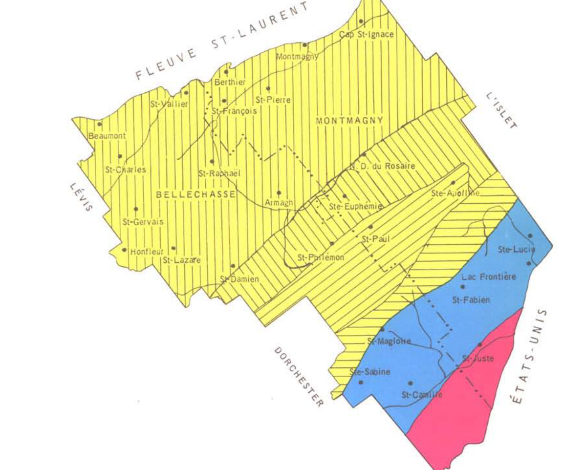
ILLUSTRATION 1 — Formations géologiques
Groupe d'Armagh
" de Rosaire
" de Bennett
" de Caldwell
" de Beauceville
" de Saint-Juste
2. Géologie
D'après Béland (5), les assises géologiques (Illustration 1) sont de périodes différentes et dateraient soit du dévonien (groupe de Saint-Juste), soit de l'ordovicien (groupe de Beauceville), soit du cambrien (groupes de Caldwell, de Rosaire, de Bennett et d'Armagh). Dans le territoire à l'étude, il n'est cependant pas facile de relier la nature lithographique du matériau originel à tel ou tel groupe à cause du chambardement des assises géologiques, surtout dans la zone occupée à la fois par le Beauceville, le Saint-Juste et le Caldwell. Il existe toutefois des relations plus ou moins étroites entre la lithographie complexe de Beauceville, de Saint-Juste et de Caldwell et la catena Arago-Garneau-Lafontaine, entre la lithographie du Rosaire et la catena Chapais--Painchaud-Chabot, enfin entre la lithographie de l'Armagh et la catena Onésime-Carmel-Ixworth.
3. Géomorphologie
Le territoire sous observation comprend deux grandes zones distinctes au point de vue géomorphologique : d'une part, une zone située à une altitude inférieure à 500 pieds et soumise aux phénomènes de l'invasion marine; d'autre part, une zone appalachienne allant de 500 pieds à 3,000 pieds d'altitude, soumise aux phénomènes de la glaciation. (Illustration 2).
Les dépôts superficiels de la zone soumise à l'invasion marine (mer Champlain) montrent une composition texturale quasi proportionnelle à leur position (altitude). En général, les terrasses alluviales ou dépôts en position inférieure à 100 pieds ont une texture plutôt fine, alors que les terrasses formant les gradins entre 150 et 500 pieds sont constituées en grande partie de sable, de sable graveleux et de gravier sableux. Les matériaux étalés en position inférieure à 50 pieds (alluvions d'origine récente) ont généralement une texture de loam argileux avec ensablements occasionnels. Tous les dépôts épandus au pied des Appalaches jusqu'au fleuve sont plus ou moins profonds, dépendants qu'ils sont de la topographie capricieuse du roc sous-jacent.
Dans la zone appalachienne, les phénomènes de la glaciation se concrétisent dans la présence de tills et de dépôts fluvio-glaciaires : les premiers ayant été laissés par les glaciers lors de leur passage et les seconds entraînés et déposés pêle-mêle par les eaux de fonte des glaciers. Quant à la texture, les tills sont généralement des loams sableux et les fluvio-glaciaires des graviers ou sables graveleux.
À la suite de la glaciation et de l'invasion marine, nombre de petits lacs, d'ailleurs peu profonds et souvent sans décharge, ont vite été envahis par la végétation pour former des tourbières ou dépôts organiques généralement peu décomposés.
Enfin dans le territoire à l'étude, il existe d'une part le long des rivières des alluvions récentes dont la texture et la nature du matériau originel demeurent variables et d'autre part, de nombreux dépôts, variables en étendue, où les divers phénomènes d'érosion ont presque favorisé la mise à nu des assises géologiques.
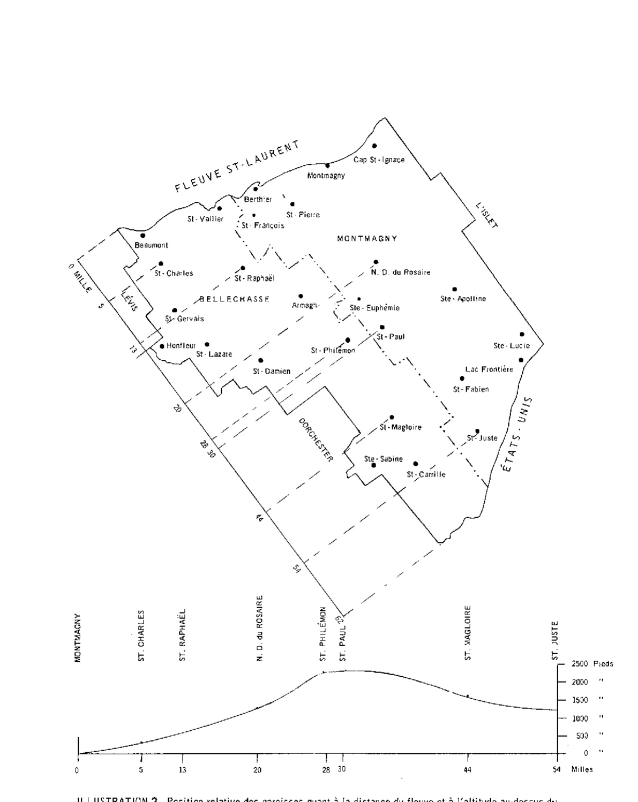
ILLUSTRATION 2. Position relative des paroisses quant à la distance du fleuve et à l'altitude au-dessus du niveau moyen de la mer.
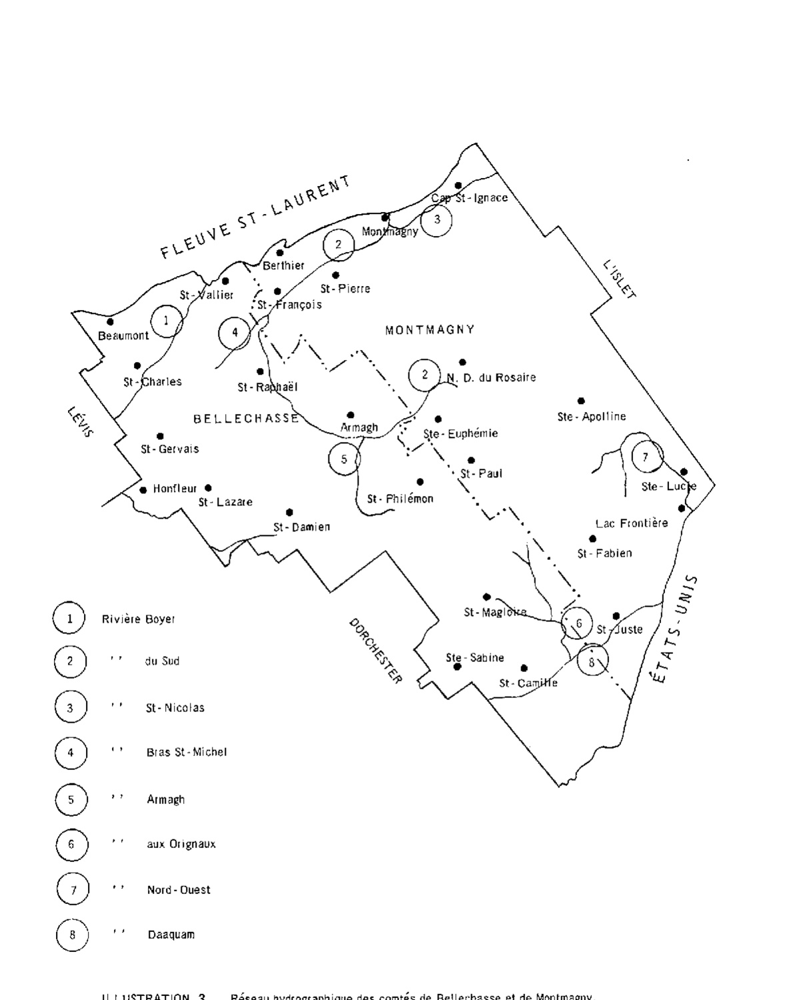
ILLUSTRATION 3. Réseau hydrographique des comtés de Bellechasse et de Montmagny.
①
Rivière Boyer
②
" du Sud
③
" St-Nicolas
④
" Bras St-Michel
⑤
" Armagh
⑥
" aux Orignaux
⑦
" Nord - Ouest
⑧
" Daaquam
4. Hydrographie
Comme le montre l'illustration 2, le territoire, quoique très accidenté, se divise en deux versants principaux: un versant nord en pente vers le fleuve Saint-Laurent et un versant sud qui draine ses eaux dans la rivière Saint-Jean.
Les principales rivières (Illustration 3) sillonnant le versant nord, le plus important en étendue, sont les rivières du Sud et Saint-Nicolas qui se rejoignent à Montmagny, la rivière Boyer qui déverse ses eaux dans le fleuve à Saint-Vallier, la rivière Armagh qui forme confluent avec la rivière du Sud à Armagh et enfin la rivière aux Billots qui se décharge dans l'Etchemin à Abénaquis. Sur le versant sud, la rivière aux Orignaux se jette dans la rivière Daaquam à Saint-Camille et cette dernière charrie ses eaux jusqu'à la rivière Saint-Jean à la frontière canado-américaine. Enfin, dans la partie sud-est du territoire, la rivière Nord-Ouest déverse son contenu dans le lac Frontière et rejoint en dernier essor la rivière Saint-Jean en territoire américain.
5. Climatologie
Le climat est, selon Plaisance et Cailleux (10), l'ensemble des conditions atmosphériques d'une région pendant une durée de plusieurs années.
TABLEAU 1. Données climatiques comparatives pour trois stations dans ou à proximité du territoire à l'étude.
Station Comté
Québec Québec
Armagh Bellechasse
Sainte-Germaine Dorchester
Années d'observation
59
43
9
Latitude nord
46° 48'
46° 45'
46° 22'
Longitude ouest
71° 13'
70° 35'
70° 30'
Température moyenne annuelle en °F
41.4
38.4
36.9
Précipitation annuelle totale en pouces
42.68
38.38
38.38
Nombre de jours avec température minimum de 32°F ou moins
173
178
191
Bulletin météorologique de Québec
Les observations (tableau 1) recueillies à trois stations météorologiques, choisies et établies dans ou à proximité du territoire, sont sans doute de nature à satisfaire quelque peu à l'énoncé précédent. Les données relatives à la température montrent que des écarts appréciables existent entre les différentes stations, écarts qui seraient produits surtout à cause de la différence dans les niveaux d'altitude: 41°F à Québec; 38.4°F à Armagh; 36.9°F à Sainte-Germaine. Il en serait de même pour le nombre de jours avec température minimum de 32°F ou moins: 173 à Québec; 178 à Armagh; 191 à Sainte-Germaine.
Les observations relatives à la précipitation laissent prévoir que le sol reçoit un bon approvisionnement en eau puisque les données sont de 42.68 pouces à Québec, de 38.38 pouces à Armagh et de 38.68 pouces à Sainte-Germaine. Du même coup, il y a lieu de craindre, lorsque la précipitation annuelle totale est forte, un lessivage intense du sol et un appauvrissement rapide en éléments nutritifs dans le sol.
6. Végétation
Au premier coup d'œil, il semble difficile de qualifier d'un épithète unique et global le couvert végétal naturel du territoire à l'étude. Selon Villeneuve (12), la composition végétale du couvert forestier serait caractérisée par un mélange d'essences à larges feuilles et de résineux. Si l'on considère toutefois qu'à différents niveaux d'altitude correspondent souvent des conditions particulières de température et de précipitation (tableau 1), et si l'on tient compte en même temps des variations dans la nature du matériau originel et du drainage, il est alors possible de reproduire une image assez réaliste quoique généralisée de la végétation dans les comtés de Bellechasse et de Montmagny.
À faible altitude, sur les alluvions maritimes récentes, il y a a présence presqu'exclusive de plantes herbacées. Sur les sédiments marins de même que sur les terrassses alluvionnaires et deltaïques, il y aurait prédominance d'érablières sur les sites bien drainés et de cèdrières dans les dépressions. Dans la zone des tills appalachiens et des fluvio-glaciaires, il semblerait d'une part que les conifères s'accommodent bien d'un matériau originel acide et pauvre en bases, sur lequel des conditions particulières de température et de précipitation favorisent une podzolisation rapide; d'autre part, les feuillus seraient bien représentés dans les sites où le matériau originel est alcalin ou neutre et relativement bien pourvu en bases. Dans l'un ou d'autre cas cependant, les conifères dominent là où le sol est hydromorphe.
II. Les sols
Notions préliminaires.
Dans ce chapitre, il sera question des sols, c'est-à-dire de leur formation, de leur classification et de leur description morphologique.
1. Formation des sols
Sous l'action combinée d'agents physiques, chimiques et biologiques, la roche se transforme en matériaux meubles, susceptibles d'évolution sous l'influence des différents facteurs de formation du sol, tels la roche-mère, le relief, le climat, la végétation, l'âge et l'homme.
L'influence prépondérante d'un ou de plusieurs de ces facteurs dans le milieu évolutif conditionne divers processus pédogénétiques qui favorisent à leur tour la formation d'horizons caractéristiques et distinctifs, servant de critères à l'établissement de la taxonomie pédologique.
L'examen du profil, coupe verticale dans le sol, favorise grandement l'étude des horizons du sol et permet au pédologue de poser un diagnostic valable quant à la place qu'occupent les différents sols dans le système canadien de la classification des sols.
2. Classification des sols
D'après les caractéristiques du profil, les sols de la région à l'étude se répartissent dans les grands groupes suivants : les gleysols humiques, les gleysols, les podzols, les régosols et les organosols.
Les gleysols humiques
Les gleysols humiques ont une surface humique bien minéralisée (Ah) dont l'épaisseur dépasse généralement 2 pouces et reposant sur un ou des horizons à gley.
D'une façon générale, les gleysols humiques se forment à même des matériaux fins, à drainage lent et de réaction neutre ou alcaline.
Dans les comtés de Bellechasse et de Montmagny, les gleysols humiques figurent au niveau du sous-groupe comme gleysol humique orthique (séries La Pocatière et Kamouraska) et gleysol humique orthique tourbeux (séries Mawcook et Chabot).
Les gleysols
Les gleysols sont moins évolués que les gleysols humiques. Ils ont une surface organique peu ou pas minéralisée reposant sur un substratum fortement gleyifié. Les gleysols ne montrent pas d'horizons éluvial et illuvial.
Au niveau du sous-groupe, les gleysols de la région concernée se répartissent en gleysols régosoliques (série Montmagny), en gleysol orthique (série Du Creux) et en gleysols tourbeux (séries Ixworth et Lafontaine).
Les podzols
Les podzols ont une surface organique de type L-H, peu ou pas minéralisée, un horizon d'éluviation gris cendré (Ae) et un horizon d'illuviation enrichi en fer (Bf ou Bhf). Ils évoluent généralement sur des matériaux de texture légère et de réaction acide.
Les podzols de la zone classifiée se répartissent en podzols orthiques (séries Saint-Pacôme, Saint-André, Saint-Nicolas, Rivière-du-Loup, Saint-Bruno, Pohénégarnook, Calder, Saint-Onésime, Chapais et Arago) et en podzols à gley (séries Du Cap, Saint-Épiphanie, Dessaint, Mont-Carmel, Painchaud et Garneau).
Les régosols
Les régosols groupent les sols dont les horizons sont peu apparents. L'horizonation se limite le plus souvent à la couche organique de surface qui peut être de type Ah mais généralement de typ L-H et inférieur à 12 pouces d'épaisseur.
Dans l'aire étudiée, tous les sols jeunes évoluant sur des dépôts alluvionnaires récents appartiennent au groupe des régosols et au sous-groupe des régosols orthiques.
Les organosols
Dans la région à l'étude, les sols organiques sont généralement oligotrophes. Ils ont une surface organique non incorporée à la matière minérale et généralement supérieure à 12 pouces d'épaisseur.
Selon le degré de décomposition, les sols organiques se répartissent soit en terre noire ($\text{TN}_1$), soit en terre noire tourbeuse ($\text{TN}_2$), soit en tourbe (T).
Série, type et phase
La série est l'unité fondamentale en classification des sols. Elle possède, outre des caractéristiques propres au grand groupe et au sous-groupe, des caractéristiques particulières liées à la nature de la roche-mère, au drainage et au développement du profil.
Fréquemment, sur un même matériau originel, apparaissent différentes séries de sols qui correspondent étroitement à des conditions différentes de drainage. C'est en langage de terrain une caténa ou séquence de sols.
La série porte généralement le nom de la localité ou du lieu où elle fut identifiée la première fois.
Le type de sol se confond dans la série et désigne un individu bien caractérisé quant à la texture du profil en surface. Il correspond aussi à la plus petite unité cartographiée.
La phase souligne la variation possible dans les différentes caractéristiques du profil.
3. Représentation cartographique
Sur la carte pédologique dressée à l'échelle conventionnelle de 1 pouce au mille, la délimitation des unités cartographiques s'effectue au niveau de la série ou complexe de séries auxquelles s'ajoute la double notion de type et de phase.
Les unités cartographiques, une fois établies et délimitées sur la carte, sont colorées de teintes diverses dans le but de faire ressortir les sols en tant qu'individus ou groupe d'individus et cela en tenant principalement compte de la texture, du drainage et de la répartition géographique. Ainsi, les unités cartographiques colorées en bleu englobent, dans la plaine, des sols argileux ou une prédominance de sols argileux. De même, les unités vertes identifient des sols loameux; les unités jaunes, des sols sableux; les unités rouges, des sols graveleux et appalachiens; les unités brunes, des sols loameux, pierreux et appalachiens; les unités grises, des sols organiques et les unités violacées, des affleurements rocheux ou des alluvions non différenciées.
Sur la carte pédologique, la série ou le complexe de séries, qui identifient généralement l'unité cartographique, ont en dénominateur quelque précision au sujet de la pierrosité (tableau 2) et de la topographie (tableau 3), afin de fournir en quelque sorte une image tridimensionnelle du paysage. Dans les deux tableaux qui suivent, apparaissent justement les diverses classes de pierrosité et de topographie, de même que leur interprétation, telles qu'utilisées sur le terrain.
TABLEAU 2. — Interprétation des classes de pierrosité
0 — Peu ou pas de pierres
1 — Modérément pierreux: pierres quelque peu nuisibles à la culture
2 — Très pierreux: certains travaux d'épierrement sont nécessaires
3 — Excessivement pierreux: travaux d'épierrement considérables
4 — Extrêmement pierreux: trop pierreux pour la culture
✓ — Sol épierré
TABLEAU 3. — Interprétation des classes de topographie
% pente
Pente simple
Pente irrégulière
Terrain
0
A
a
Déprimé
0 — .5
B
b
Horizontal
.5 — 2
C
c
Pente très faible
2 — 5
D
d
Pente faible
5 — 10
E
e
Pente modérée
10 — 15
F
f
Pente raide
15 — 30
G
g
Pente très raide
30 +
H
h
Montueux
Légende des sols.
A. GLEYSOLS HUMIQUES
1. Gleysol humique orthique
— Série La Pocatière
Matériau originel: sédiments marins argileux et calcaires. Drainage: imparfait Loam argileux La Pocatière
— Série Kamouraska
Matériau originel : sédiments marins argileux et calcaires.
Matériau originel : till remanié par l'eau, à texture de loam pierreux, issu de schistes et de grès acides, gris, verts et rouges. Parfois de nature résiduelle.
Matériau originel : till glaciaire loameux et pierreux, issu de schistes ardoisiers acides, gris, verts et bruns. Généralement calcaire. Groupes de Rosaire et de Bennett.
Matériau originel : till glaciaire loameux et pierreux issu de schistes ardoisiers verts, gris et bruns et de quartzite. Matériaux acides. Groupe d'Armagh.
Matériau originel : till glaciaire loameux et pierreux, issu de schistes ardoisiers verts, gris et rouges et de quartzite. Matériaux acides. Groupes de Rosaire et de Caldwell.
Matériau originel : gravier sableux, issu de schistes ardoisiers et argileux brun rouge et de grès, souvent de nature colluviale et résiduelle. Matériaux acides.
Matériau originel : dépôts fluvio-glaciaires à texture de gravier sableux et pierreux, issu de quartz, de microgrès, de schistes ardoisiers et de matériaux granitiques. Matériaux acides.
Matériau originel : dépôts fluvio-glaciaires à texture de gravier sableux, issu de grès, de schistes friables et de schistes ardoisiers. Matériaux acides.
Matériau originel : till glaciaire à texture de loam pierreux, brun à brun foncé, issu de grès, de schistes ardoisiers gris et bruns, de quartzite et de schistes argileux. Matériaux acides, Groupe d'Armagh.
Drainage : bon à excessif
Loam pierreux Saint-Onésime O
Loam pierreux Saint-Onésime, phase mince O-m
Série Chapais
Matériau originel : till glaciaire à texture de loam pierreux, gris à gris clair, issu de schistes ardoisiers noirs et gris souvent calcaires, de microgrès et de quartzite. Groupes de Rosaire et de Bennett.
Drainage : bon à excessif
Loam sableux et pierreux Chapais Ch
Loam sableux et pierreux Chapais, phase mince Ch-m
Série Arago
Matériau originel : till glaciaire à texture de loam pierreux, brun gris à gris, issu de schistes ardoisiers verts et gris, de microgrès et de quartzite. Matériaux acides, Groupes de Frontière et de Beauceville.
Drainage : bon
Loam pierreux Arago Ao
Loam pierreux Arago, phase mince Ao-m
2. Podzol à gley
Série Du Cap
Matériau originel : alluvions littorales à texture de loam limono-argileux acide.
Drainage : imparfait
Loam limoneux Du Cap Cap
Série Saint-Épiphane
Matériau originel : dépôts marins et deltaïques à texture de sable issu de grès, de schistes ardoisiers et de quartzite acides.
Drainage : imparfait
Loam sableux Saint-Épiphane Épi
Série Dessaint
Matériau originel : till remanié par l'eau, à texture de loam pierreux à loam sableux et pierreux, contenant parfois des lentilles d'argile brun rouge. Matériaux acides.
Drainage : imparfait à mauvais
Loam pierreux Dessaint D
Série Mont-Carmel
Matériau originel : till glaciaire à texture de loam pierreux, brun à brun foncé, issu de grès, de schistes ardoisiers gris et bruns, de quartzite et de schistes argileux. Matériaux acides, Groupe d'Armagh.
Drainage : imparfait
Loam pierreux Mont-Carmel Ca
Série Painchaud
Matériau originel : till glaciaire à texture de loam pierreux, gris à gris brun clair, issu de schistes ardoisiers noirs et gris souvent calcaires, de microgrès et de quartzite. Groupes de Rosaire et de Bennett.
Drainage imparfait
Loam pierreux Painchaud .......................................................................................... Pai
Série Garneau
Matériau originel : till glaciaire à texture de loam pierreux, brun gris à gris, issu de schistes ardoisiers verts, de microgrès et de quartzite. Matériaux acides. Groupes de Frontière et de Beauceville.
Drainage imparfait
Loam pierreux Garneau .......................................................................................... Ga
D. RÉGOSOLS
Régosol à gley
Alluvions non différenciées, de texture très variable .................................................... All
Toutes les séries de sols énumérées à la légende retrouvent, l'une après l'autre, dans les pages qui suivent, leur description. Les descriptions reflètent généralement les conditions de champ et se confondent, dans la plupart des cas, avec celles incluses dans «Étude pédologique du comté de Kamouraska».1
A. GLEYSOLS HUMIQUES
Dans les comtés de Bellechasse et de Montmagny, les gleysols humiques ont fait l'objet de deux groupes différents : le gleysol humique orthique et le gleysol humique tourbeux.
1. — Roger Baril et Bertrand Rochefort, agronomes-pédologues.
1. GLEYSOL HUMIQUE ORTHIQUE
À ce sous-groupe appartiennent deux séries de sols : la série La Pocotière et la série Kamouraska.
— SÉRIE LA POCATIÈRE (P)
Superficie : Bellechasse 2,341 acres; Montmagny 3,604 acres
Topographie : pente simple, faible à modérée
Drainage : imparfait
Pierrosité : peu ou pas de pierres
Les sols de la série La Pocotière se rencontrent surtout dans les paroisses de Saint-Charles, de Saint-Michel, de La Durantaye, de Saint-Vallier, de Saint-François, de Saint-Pierre, de Montmagny et de Cap Saint-Ignace. Ils occupent les endroits valonnés et accidentés le long des rivières et sont généralement associés aux sols de la série Kamouraska.
Sol La Pocotière en position supérieure et sol Kamouraska plus bas.
Le matériau originel du La Pocotière est constitué de sédiments marins argileux, calcaires, de couleur grise et de consistance plastique. Au point de vue textural, il montre parfois des variations soudaines qui sont d'ailleurs incluses dans la définition de la série.
Pratiquement tous les sols de la série La Pocotière sont exploités et livrés à l'agriculture. En de rares endroits cependant subsiste encore une végétation arborescente clairsemée et surtout représentée par l'érable et l'orme.
Les sols de la série La Pocotière n'ont fait l'objet que d'un seul type, le loam argileux La Pocotière.
Sols La Pocatière et Kamouraska victimes d'un glissement de terrain.
Profil du loam argileux La Pocatière
Horizon
Profondeur en pouces
Description
Aa
0- 6
Loam argileux à argile brun gris à gris foncé (2.5Y 5/2 à 4/2); structure granulaire moyenne; consistance ferme, perméable; pH 6.6.
Ae
6- 7
Loam limono-argileux gris brun pâle (2.5Y 6/2); horizon souvent discontinu en sol cultivé.
Bg1
7-13
Argile brun pâle à gris brun foncé (2.5Y 5/2 à 4/2) avec taches de rouille brun brun rouge; structure polyédrique bien développée; consistance ferme; peu perméable; pH 6.6.
Bg2
13-30
Argile brun gris clair (2.5Y 5/2); structure polyédrique modérément à peu développée; consistance ferme; présence occasionnelle de lits de sable; peu perméable; pH 7.1.
Comparés aux autres sols de la zone à l'étude, les sols La Pocatière sont fertiles. Ils se prêtent très bien aux récoltes de grande culture et conviennent aussi, compte tenu de l'adaptation des variétés au climat, aux cultures horticoles et fruitières. Les plantes-tubercules n'ont toutefois pas de chance de réussite en sols argileux comme ceux de la série La Pocatière.
SÉRIE KAMOURASKA (K)
Superficie : Bellechasse 10,693 acres; Montmagny 19,884 acres
Topographie : horizontale à pente simple, très faible
Drainage : mauvais
Pierrosité : modérément pierreux à très pierreux
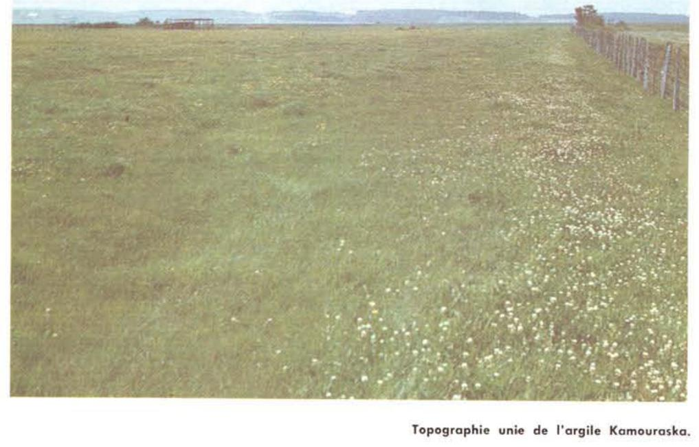
Topographie unie de l'argile Kamouraska.
L'argile Kamouraska couvre des aires relativement restreintes dans les paroisses de Saint-Charles, de Saint-Michel, de La Durantaye, de Saint-François, de Saint-Pierre, de Montmagny et de Cap Saint-Ignace. Elle tapisse généralement, à la suite d'alluvions maritimes récentes, le deuxième palier à partir du fleuve. De plus, l'argile Kamouraska est généralement associé aux sols La Pocatière.
Le matériau originel du Kamouraska est argileux, calcaire et de couleur grise. La proportion d'argile, quoique généralement forte, peut varier compte tenu de la présence occasionnelle de lits de sable ou de limon.
De nombreux blocs erratiques, sans doute apportés là par des glaces flottantes et souvent apparentés aux matériaux laurentiens, jonchaient autrefois les sols argileux Kamouraska et forment encore de nos jours d'imposantes digues de pierres dans les champs.
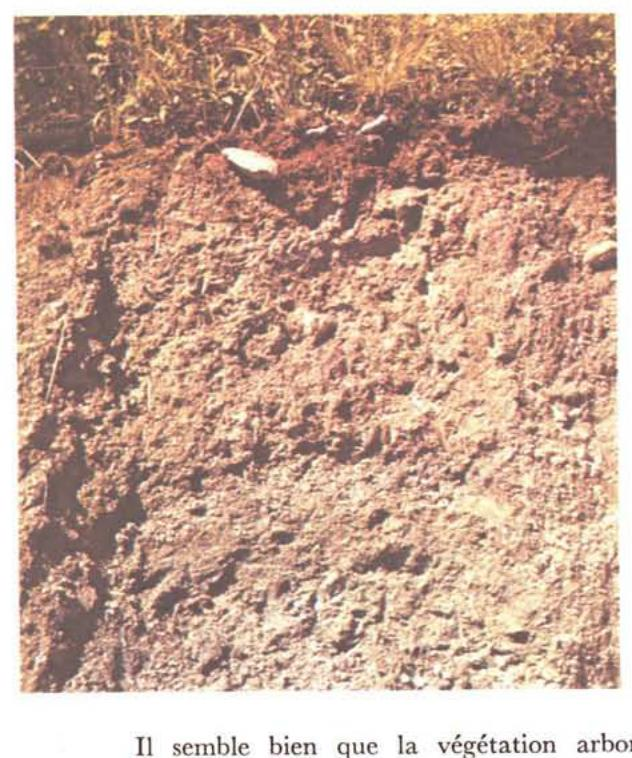
Profil de l'argile Kamouraska.
Il semble bien que la végétation arborescente, aujourd'hui disparue, pouvait être originellement constituée de plantes s'adaptant particulièrement bien sur un sol pourtant fertile mais mal drainé et souvent anaérobique. Le cèdre devait alors bien figurer au sein de l'association végétale existante.
Les sols de la série Kamouraska n'ont fait l'objet que d'un seul type, l'argile Kamouraska.
Profil de l'argile Kamouraska
Horizon
Profondeur en pouces
Description
Aa
0-8
Argile brun gris très foncé (10YR 3/2) avec structure polyédrique à agrégats moyens et fins; modérément fermes; friable et perméable; pH 5.9.
Aeg
8-10
Argile grise (10YR 5/1) massive et de consistance dure à l'état sec; mouchetures nombreuses mais petites et de couleur brune; imperméable; pH 5.8.
Bgj'
10-18
Argile grise à gris foncé (10YR 5/1, 4/1); structure polyédrique modérément à faiblement développée; mouchetures nombreuses et constantes de couleur brun jaune; peu friable et peu perméable; pH 6.6.
Bgj²
18-30
Argile grise (10YR 5/1) avec structure polyédrique faiblement développée; mouchetures brun jaune; peu friable et peu perméable; pH 7.2.
Cg
30-36
Argile gris foncé (10YR 4/1) avec structure polyédrique peu développée, mouchetures brun jaune peu visibles; plastique et imperméable; pH 7.4.
Ck
36 +
Argile grise (10YR 5/1); massive et calcaire.
Fiche analytique d'une argile Kamouraska
Horizon
Profon-deur en pouces
Sable
Limon
Argile
pH
C
N
Bases totales
C.E.
Satura- tion %
%
%
%
%
%
Aa
0- 6
19.0
24.2
56.8
5.7
1.28
0.09
19.29
23.79
80
Aeg
6-10
15.0
24.2
60.8
6.6
0.72
0.05
22.33
24.83
89
Bgj¹
10-20
13.0
24.2
62.8
6.7
0.42
0.04
20.20
22.20
90
Bgj²
20-30
11.0
20.2
68.8
6.8
0.42
0.04
17.57
19.57
89
Cg
30 +
8.4
18.0
73.6
7.2
0.47
0.03
21.03
21.03
100
Utilisation agricole
Les argiles Kamouraska sont fertiles et conviennent très bien à l'industrie laitière ou à la grande culture. Une amélioration des conditions de drainage et de la structure serait de nature à intensifier les rendements de façon avantageuse.
2. GLEYSOL HUMIQUE TOURBEUX.
À ce sous-groupe appartiennent deux séries de sols : la série Mawcook et la série Chabot.
- SÉRIE MAWCOOK (Maw)
Superficie : Bellechasse 8,858 acres; Montmagny 2,700 acres Topographie : pente simple, faible à très faible Drainage : mauvais Pierrosité : modérément pierreux à très pierreux
Les sols de la série Mawcook, quoique localisés dans des aires plutôt restreintes, se rencontrent un peu partout dans la zone des terrasses alluvionnaires et deltaïques. Ils sont généralement minces (moins de 3') et ordinairement associés aux sols Saint-André et Saint-Nicolas. Ils occupent généralement les dépressions où les conditions de drainage s'avèrent souvent défectueuses.
Le matériau originel du Mawcook serait un till fortement remanié, compact et lithologiquement constitué de schistes ardoisiers et argileux, de grès acides et calcaires dont la texture varie du loam au loam sableux et dont la coloration montre un coloris de rouge, de vert et de gris.
Les sols de la série Mawcook n'ont fait l'objet d'un seul type, le loam Mawcook.
Profil du loam Mawcook
Horizon
Profondeur en pouces
Description
Aa
0- 8
Loam à loam sableux et pierreux brun gris très foncé (10YR 2/2) avec humus minéralisé; structure granulaire; friable et perméable; pH 5.6.
Aeg
Loam sablo-pierreux gris brun clair (10YR 6/2); mouchetures brun jaune; horizon souvent discontinu en terrain cultivé.
Bg
8-18
Loam à loam sablo-pierreux brun foncé (10YR 4/3); mouchetures abondantes brun jaune; présence de schistes et de grès aux couleurs variées; tendance à la compacité; pH 6.6.
Cg
18 +
Loam à loam sablo-pierreux brun gris foncé (10YR 4/2); structure massive; horizon bigarré et mouchetures brun vif; peu friable et peu perméable; pH 7.0. Horizon parfois calcaire.
Fiche analytique d'un loam pierreux Mawcook
Horizon
Profon-deur en pouces
Sable %
Limon %
Argile %
pH
C %
N %
Bases totales
C.E.
Satura-tion %
Aa
0-7
22.8
53.8
23.4
5.5
5.86
0.24
7.50
20.30
38
Bg
7-16
24.8
51.8
23.4
5.9
3.20
0.23
4.80
10.80
44
Cg
16 +
64.8
21.8
13.4
6.7
0.22
0.22
4.10
5.60
73
Utilisation agricole
Les sols Mawcook, à cause de leur position, sont souvent gorgés d'eau. Toutefois, un drainage excessif les expose à croûter facilement. Une fois débarrassés de leur surplus d'eau et bien fertilisés, les sols Mawcook conviennent très bien aux pâturages.
SÉRIE CHABOT (Cha)
Superficie : Bellechasse 4,336 acres; Montmagny 6,078 acres
Topographie : pente irrégulière, faible à très faible
Drainage : mauvais à très mauvais
Pierrosité : très pierreux à excessivement pierreux
Les sols de la série Chabot se rencontrent dans la zone des tills appalachiens. Ils occupent les bas de pente et les dépressions dans les paroisses de Buckland, Saint-Philémon, Saint-Magloire, Sainte-Sabine, Saint-Paul-du-Buton, Saint-Juste, Saint-Fabien et Sainte-Cécile-Apolline. Tout en étant associés aux séries Chapais et Painchaud, ils représentent cependant le membre mal drainé de la caténa. Parfois, ils sont légèrement recouverts de matériaux colluviaux.
Le matériau originel du Chabot, un till pierreux à texture de loam argileux, montre une bonne teneur en calcium qui favorise la décomposition de la matière organique en surface.
Le cèdre et l'aulne composent actuellement la majeure partie de la végétation sur les sols de la série Chabot.
Les sols de la série Chabot n'ont fait l'objet que d'un seul type, le loam pierreux Chabot.
Profil du loam pierreux Chabot
Horizon
Profondeur en pouces
Description
Ah (H)
0-10
Loam à loam sableux humifère et souvent pierreux (2.5Y 3/0); structure polyédrique bien développée; friable et perméable; horizon de surface parfois composé d'une terre noire bien décomposée; pH 6.1.
Aeg
10-14
Loam à loam sableux parfois pierreux (5Y 4/1); structure massive; mouchetures visibles et petites, jaunes à jaune pâle; consistance plastique; peu friable et peu perméable; pH 6.3.
Bg'
14-16
Loam à loam sableux pierreux brun olive clair (2.5Y 5/6); structure quasi massive à grossièrement polyédrique; mouchetures abondantes et jaunes; peu friable et peu perméable; pH 6.6.
Bg²
16-26
Loam gris clair à gris olive (5Y 5/2); structure quasi massive; mouchetures diffuses olive pâle; peu friable et peu perméable; pH 7.0.
Ck
26 +
Loam à loam argileux pierreux gris olive (5Y 5/4); structure massive; schistes tendres et calcaires; peu friable et peu perméable.
Fiche analytique d'un loam humifère Chabot
Horizon
Profon- deur en pouces
Sable %
Limon %
Argile %
pH
C %
N %
Bases totales
C.E.
Satura- tion %
H
0-10
—
—
—
5.6
33.82
1.52
13.15
56.63
23
Aeg
10-14
45.2
48.4
6.4
5.1
3.84
0.27
1.88
16.28
11
Bg
14-26
55.2
36.4
8.4
5.8
0.53
0.04
1.03
3.81
27
Cg
26 +
47.2
36.4
16.4
6.9
0.31
0.03
1.85
4.25
43
Utilisation agricole
De tous les sols de la zone appalachienne, les sols Chabot sont sans doute les mieux pourvus en éléments fertilisants. Cependant, comme ils sont souvent localisés dans des endroits difficiles d'accès et mal drainés, ils semble bien qu'ils conviennent peu à l'agriculture en général puisqu'ils montrent justement un assèchement tardif au printemps et un mouillage facile lors de pluie abondantes.
B. GLEYSOLS
Dans le territoire à l'étude, les gleysols ont fait l'objet de trois sous-groupes différents: le gleysol régosolique, le gleysol orthique et le gleysol tourbeux.
1. GLEYSOL RÉGOSOLIQUE
À ce sous-groupe appartient une seule série de sols: la série Montmagny.
- SÉRIE MONTMAGNY (My)
Superficie : Bellechasse 399 acres; Montmagny 5,599 acres
Topographie : pente simple, très faible à faible
Drainage : imparfait
Pierrosité : peu ou pas de pierres
Les sols Montmagny sont surtout localisés dans les paroisses de Berthier, de Montmagny et de Cap Saint-Ignace. Ils occupent une position légèrement inférieure à celle des argiles Kamouraska et La Pocatière. En réalité, ils forment une platière surplombant à peine de 50 pieds le niveau moyen actuel du fleuve.
Les sols de la série Montmagny ne forment qu'un seul type, le loam limoneux Montmagny, et sont géographiquement associés à ceux de la série Du Cap et font partie de la caténa Du Cap Montmagny-des-Battures. Le dernier membre, la série Des Battures, ne figure cependant qu'à l'Ile-aux-Grues et fera partie d'un projet subséquent.
Des sédiments littoraux de déposition récente et à texture de loam à loam limono-argileux constituent le matériau originel de Montmagny. De la matière organique, généralement peu décomposée, est incorporée aux sédiments surtout dans la partie supérieure du dépôt.
Tous les sols de la série Montmagny sont actuellement livrés à la culture. Il semble cependant que ces sols n'ont jamais supporté de végétation arborescente mais qu'ils auraient cependant nourri, d'une façon tout-à-fait luxuriante, une végétation totalement herbacée.
Les sols de la série Montmagny n'ont fait l'objet que d'un seul type, le loam limoneux Montmagny.
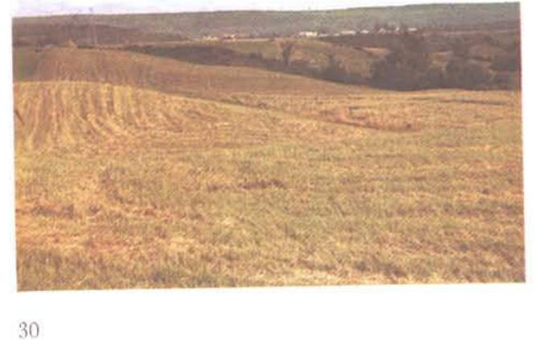
Topographie parfois mamelonnée des sols La Pocatière au contact des sols Kamouraska.
Profil du loam limoneux Montmagny
Horizon
Profondeur en pouces
Description
Aa
0-8
Loam limoneux brun gris foncé (10YR 4/2); structure polyédrique modérément développé; friable et perméable; horizon parfois constitué de terre noire bien décomposée; pH 5.8.
Cg¹
8-20
Loam limoneux gris olive (5Y 5/2); structure polyédrique faiblement développée; mouchetures abondantes brun jaune foncé; débris de plantes souvent visibles; friable et perméable; pH 6.0.
Cg²
20 +
Loam limoneux brun gris (2.5Y 5/2); structure peu développée et plutôt massive; mouchetures abondantes brun jaune foncé; peu friable et peu perméable; pH 6.2. En profondeur, à environ 48 pouces, dégagement d'odeurs sulfureuses au contact de HCl dilué.
Fiche analytique du loam limoneux Montmagny
Horizon
Profondeur en pouces
Sable %
Limon %
Argile %
pH
C %
N %
Bases totales
C.E.
Saturation %
Aa
0-8
18.6
58.2
23.2
5.1
3.87
0.29
6.60
13.10
50
Cg¹
8-20
18.6
62.2
19.2
5.4
0.70
0.07
4.20
8.20
51
Cg²
20 +
20.6
60.2
19.2
6.3
0.83
0.07
6.10
8.10
75
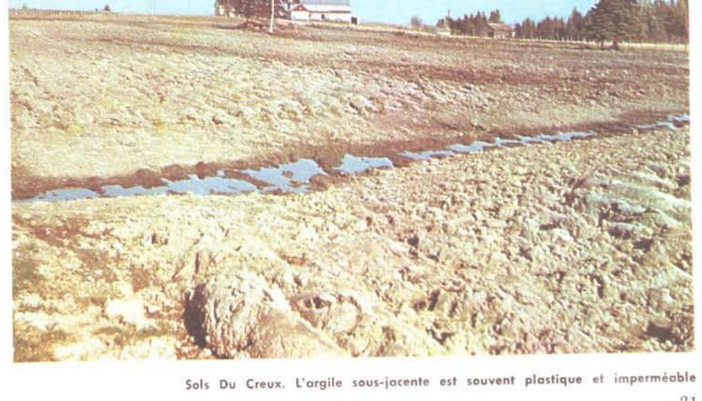
Sols Du Creux. L'argile sous-jacente est souvent plastique et imperméable.
Utilisation agricole
Les sols Montmagny sont entièrement cultivés et pour cause. En effet ils sont unis, libres de pierre, ont un potentiel de fertilité passablement bon et se prêtent de cette façon admirablement bien à la grande culture. Cependant, avec un contrôle plus poussé des eaux de drainage et avec une fertilisation accrue, il semble que ces sols pourraient être livrés avantageusement à la pratique horticole et servir de cette façon la population du milieu.
2. GLEYSOL ORTHIQUE
À ce sous-groupe appartient une seule série de sol: la série Du Creux. (Le sol Du Creux était auparavant classé podzol à gley) (4).
- SÉRIE DU CREUX (C)
Superficie : Bellechasse 4,336 acres; Montmagny 838 acres Topographie : pente irrégulière, faible à très faible Drainage : imparfait Pierrosité : très pierreux à excessivement pierreux
Les sols de la série Du Creux occupent des aires plutôt restreintes dans les paroisses de Honfleur, Saint-Gervais, La Durantaye, Saint-François et Cap Saint-Ignace. Ils sont généralement associés aux sols des séries Rivière-du-Loup, Dessaint et Bruno. Ils tapissent cependant, avec les sols Dessaint, le fond des vallées au pied des Appalaches. Sur la carte, ils figurent typiquement comme loam argileux Du Creux.
Le matériau originel, constitué de sédiments fluvio-lacustres à texture de loam limono-argileux à loam argileux, montre souvent des variations texturales allant du loam sableux à l'argile lourde. L'argile, lorsqu'homogène, montre une coloration brun rouge et devient calcaire en profondeur.
Le couvert forestier actuel, quoique très fragmentaire puisque les sols de la série Du Creux sont pratiquement tous mis en culture, donnent la composante suivante : érable rouge, bouleau blanc et épinette blanche.
Les sols de la série Du Creux n'ont fait l'objet que d'un seul type, le loam argileux Du Creux.
Profil du loam argileux Du Creux
Horizon
Profondeur en pouces
Description
Aa
0 - 8
Loam argileux brun (7.5YR 5/2); structure polyédrique bien développée; friable et perméable; pH 6.0.
Aejg
Loam brun gris; structure polyédrique faiblement développée; peu friable et peu perméable. Horizon souvent discontinu en sol cultivé.
Btjg
8-14
Loam argileux gris rouge (5YR 5/2); structure polyédrique grossière; mouchetures brun rouge; peu friable et peu perméable; pH 6.0.
Bg 14-24 Loam argileux gris (5YR 5/1); structure massive; mouches brun rouge; peu friable et imperméable; pH 6.2.
Cg 24 + Loam argileux à argile gris foncé (5YR 4/1) à brun rouge (5YR 5/3); structure massive; lentilles de sable fréquentes; compact et imperméable; pH 6.4.
Fiche analytique du loam argileux Du Creux
Horizon
Profondeur en pouces
Sable
Limon
Argile
pH
C
N
Bases totales
C.E.
Saturation %
%
%
%
%
%
Ac
0- 8
46.8
34.0
19.2
5.4
1.81
0.15
4.94
10.94
45
Btjg
8-14
40.8
34.0
25.2
6.4
0.42
0.04
5.74
7.74
74
Bg
14-24
22.8
44.0
33.2
6.7
0.33
0.03
5.38
7.38
72
Cg
24 +
22.8
46.0
31.2
6.9
0.39
0.02
28.70
29.70
96
Utilisation agricole
Il semble bien que le loam argileux Du Creux convienne davantage à la grande culture ou à l'industrie laitière qu'à toute autre culture. Étant donné sa position dans les bas de pente ou dans les dépressions, il demeure toujours un sol difficile à drainer et de là difficile à améliorer.
3. GLEYSOL TOURBEUX
À ce sous-groupe appartiennent deux séries de sols: la série Ixworth et la série Lafontaine.
- SÉRIE IXWORTH (I)
Superficie : Bellechasse 3,192 acres; Montmagny 7,461 acres
Topographie : pente irrégulière, faible à très faible
Drainage : mauvais à très mauvais
Pierrosité : très pierreux à extrêmement pierreux
Les sols de la série Ixworth occupent le bas des pentes ou les dépressions dans la zone où domine l'association caténaire Saint-Onésime-Mont-Carmel-Ixworth. Cartographiquement, ils se groupent sous un seul type, soit le loam humifère et pierreux Ixworth.
Comme sols mal drainés sur till appalachien, ils supportent une végétation composée surtout de cèdres et d'aulnes.
Les sols de la série Ixworth n'ont fait l'objet que d'un seul type, le loam humifère et pierreux Ixworth.
Profil du loam humifère et pierreux Ixworth
Horizon
Profondeur en pouces
Description
H (Ahj)
0- 4
Loam humifère et pierreux gris brun foncé (10YR 4/2); structure granulaire; friable et perméable; humus de type moder; pH 4.4.
Aeg 4- 8 Loam gris à gris foncé (10YR 5/1 à 4/1); structure très massive; consistance plastique; imperméable; pH 5.2.
De l'humus entraîné donne souvent une teinte foncée à cet horizon éluvial.
Cqg 14 + Loam pierreux brun jaune à brun gris (10YR 5/4 à 5/2); structure massive mais se détachant en plaquettes; compact et imperméable; nombreux cailloux anguleux; mouchetures brun vif; pH 6.0.
Fiche analytique du loam pierreux Ixworth
Horizon
Profondeur en pouces
Sable
Limon
Argile
pH
C
N
Bases totales
C.E.
Saturation %
%
%
%
%
%
H(Ahj)
0- 4
—
—
—
4.1
51.85
2.18
3.74
15.74
3
Aeg
4- 7
56.0
34.2
15.8
4.9
2.28
0.20
1.34
17.14
8
Bgj
7-14
52.8
28.2
19.0
5.5
1.92
0.08
1.54
15.54
9
Cqg
14 +
42.8
34.2
23.0
6.1
0.56
0.02
3.87
6.87
56
Utilisation agricole
D'une façon générale, les sols Ixworth sont encore sous couvert forestier. Même déboisés, ils présentent de sérieux problèmes de drainage et d'épierrement. À toute fin pratique, ils ne se prêtent guère à l'agriculture si ce n'est que pour des pâturages naturels.
SÉRIE LAFONTAINE (La)
Superficie : Bellechasse 5,945 acres; Montmagny 5,373 acres Topographie : pente irrégulière, très faible à faible Drainage : imparfait Pierrosité : très pierreux à excessivement pierreux
Dans la partie la plus élevée du territoire à l'étude, le loam pierreux Lafontaine occupe le bas des pentes et les dépressions. Il figure comme membre mal drainé dans l'association caténaire Arago-Garneau-Lafontaine.
Les sols de la série Lafontaine évoluent sur un matériau originel constitué d'un till loameux, pierreux et acide. Ils montrent souvent dans leur profil un horizon de surface organique à humus bien décomposé. Ils sont d'ailleurs fréquemment associés à des terres noires dont les étendues sont cependant très limitées.
Le type de végétation naturelle établi sur les sols Lafontaine s'identifie généralement aux cédrières.
Les sols de la série Lafontaine n'ont fait l'objet d'un seul type, le loam pierreux Lafontaine.
Profil du loam pierreux Lafontaine
Horizon
Profondeur en pouces
Description
H (Ahj)
0 - 5
Humus de type moder brun rouge foncé à noir (5YR 3/2 à 2/1) ; structure granulaire peu développée ; friable et perméable ; pierres fréquentes ; pH 5.1.
Loam sableux et pierreux gris à brun gris foncé (10YR 5/2 à 4/2) ; structure polyédrique de couleur brun jaune ; compact et quasi imperméable mais devient plus friable avec la profondeur ; présence de raies grises ; pH 5.8.
Fiche analytique d'un loam pierreux Lafontaine
Horizon
Profondeur en pouces
Sable %
Limon %
Argile %
pH
C %
N %
Bases totales
C.E.
Saturation %
Aa
0 - 8
47.2
38.0
14.8
4.8
7.71
0.46
11.39
29.39
38
C'qg
8-13
55.2
28.0
16.8
5.6
0.44
0.04
2.01
4.01
50
C²pg
13 +
49.8
31.4
18.8
6.3
0.17
0.02
3.21
5.21
61
Utilisation agricole
Étant donné que les sols de la série Lafontaine, malgré leur bon potentiel de fertilité, sont pierreux, compacts et surtout localisés dans des endroits difficiles à drainer, ils ne conviennent que très peu à une agriculture mécanisée.
C. PODZOLS
Dans les comtés de Bellechasse et de Montmagny, les podzols ont fait l'objet de deux sous-groupes différents : le sous-groupe du podzol orthique et le sous-groupe du podzol à gley.
1. PODZOL ORTHIQUE
À ce sous-groupe appartiennent dix séries de sols dont l'énumération est la suivante : les séries Saint-Pacôme, Saint-André, Saint-Nicolas, Rivière-du-Loup, Saint-Bruno, Pohénégamook, Calder, Saint-Onésime, Chapais et Arago.
SÉRIE SAINT-PACÔME (Pa)
Superficie : Bellechasse 838 acres ; Montmagny 27 acres
Topographie : pente simple, faible à modérée
Drainage : excessif à bon
Pierrosité : peu ou pas de pierres
Les sols appartenant à la série Saint-Pacôme sont peu répandus et on les rencontre surtout, quoiqu'en étendues très restreintes, dans les paroisses de Saint-Raphaël et de Cap Saint-Ignace. Ils recouvrent des terrasses graveleuses généralement accrochées aux flancs des premières collines appalachiennes. Au point de vue cartographie, ils ne forment qu'un seul type, soit le loam sableux Saint-Pacôme.
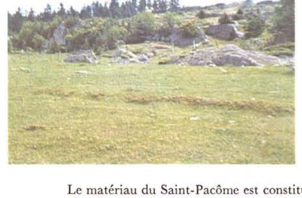
Sol Saint-Nicolas en complexe avec des éperons rocheux.
Le matériau du Saint-Pacôme est constitué de sable grossier, généralement arrondi et déposé en couches ou lits souvent discordants. Le sable repose à plus de trois pieds sur des matériaux graveleux d'origine marine ou deltaïque.
La végétation actuelle sur le Saint-Pacôme en est une de reboisement et elle est en grande partie composée de tremble, de peuplier et de bouleau.
Les sols de la série Saint-Pacôme n'ont fait l'objet que d'un seul type, le loam sableux Saint-Pacôme.
Profil du loam sableux Saint-Pacôme
Horizon
Profondeur en pouces
Description
L-H
3- 0
Humus noir (7.5YR 2/0); humus fibreux et peu minéralisé de type mor; pH 4.6.
Ae
0- 4
Sable loameux gris rosé (5YR 6/2); limites nettes et irrégulières; friable, ouvert et perméable; pH 4.8.
Sable à sable graveleux brun jaune foncé (10YR 4/4); grains particuliers et souvent arrondis; friable et perméable; pH 5.7.
IIC
30 +
Sable graveleux et pierreux brun gris foncé (10YR 4/2); stratification discordante friable et perméable; pH 5.7.
Fiche analytique d'un loam sableux Saint-Pacôme
Horizon
Profondeur en pouces
Sable %
Limon %
Argile %
pH
C %
N %
Bases totales
C.E.
Saturation %
L-H
3- 0
—
—
—
4.6
25.47
0.80
9.27
40.75
22
Ae
0- 4
85.2
11.0
3.8
4.7
1.70
0.04
0.40
2.39
17
Bhf
4-10
85.2
8.0
6.8
4.8
2.37
0.12
0.75
8.43
8
Bf
10-20
94.2
4.0
1.8
5.5
0.53
0.04
0.51
1.27
18
BC-C
20-30
98.2
1.0
0.8
5.6
0.36
0.02
0.53
0.62
85
HC
30 +
99.2
0.0
0.8
5.7
0.14
0.01
0.53
0.53
100
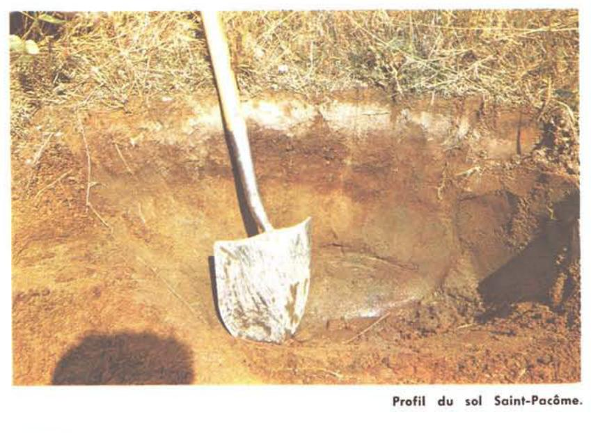
Profil du sol Saint-Pacôme.
Utilisation agricole
Les sols Saint-Pacôme ont un niveau de fertilité plutôt faible et, dans ce sens, ne conviennent que très peu à la grande culture. Cependant, étant donné d'une part qu'ils se réchauffent très vite au printemps et d'autre part qu'ils se prêtent bien aux façons culturales, il semble que ces sols, à la suite d'apports de matière organique et de fertilisants appropriés, pourraient être livrés de façon rentable aux productions horticoles.
- SÉRIE SAINT-ANDRÉ (A, As, A-m)
Superficie : Bellechasse 21,613 acres; Montmagny 12,689 acres
Topographie : pente simple faible à modérée
Drainage : bon à excessif
Pierrosité : modérément pierreux
Dans le territoire à l'étude, les sols de la série Saint-André occupent une superficie relativement importante tout spécialement dans la zone des basses-terres du Saint-Laurent, plus précisément dans les paroisses sises à un niveau moindre de 500 pieds d'altitude. Ils s'identifient généralement aux terrasses ou gradins laissés par la mer Champlain.
Le matériau originel est constitué de sable graveleux ou de gravier sableux souvent déposés en lits discordants et issus de grès, de schistes ardoisiers, de schistes argileux et de quartzite, de couleur grise, verte et brun rouge.
Il semble bien que l'érablière laurentienne forme, avec quelques essences conifériennes, le tableau de la végétation arborescente sur les sols Saint-André.
Au point de vue cartographique, les sols de la série Saint-André comprennent deux types de sols différents : le loam sablo-graveleux Saint-André et le loam sablo-schisteux Saint-André. À son tour, le loam sablo-graveleux comprend une phase mince reposant ordinairement sur roc.
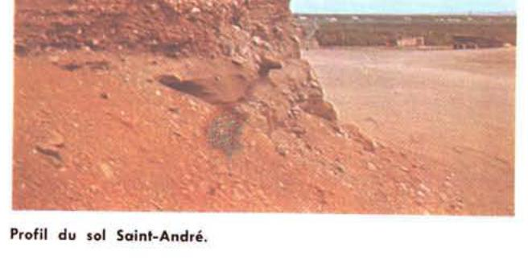
Profil du sol Saint-André.
Profil du loam sablo-graveleux Saint-André
Horizon
Profondeur en pouces
Description
Aa
0 - 6
Loam sablo-graveleux brun gris foncé (10YR 4/2); structure granulaire modérément développée; présence de petites roches arrondies; friable et perméable; tendance à croûter en période de sécheresse; pH 5.1.
Ae
6 - 8
Loam sableux gris rosé (7.5YR 6/2); grains particulaires et parfois structure lamellaire faiblement développée; limites nettes et irrégulières; pH 5.2.
Bhf
Loam sablo-graveleux brun foncé (7.5YR 3/4) évident en sol vierge et moins apparent en sol cultivé.
Bf1
8-15
Loam sablo-graveleux à sable loameux très graveleux brun vif (7.5YR 5/6); grains particuliers; limites nettes; nombreuses petites pierres arrondies; friable et perméable; pH 5.3.
Bf2
15-30
Sable très graveleux brun jaune foncé (10YR 4/4); lâche et perméable; nombreuses pierres arrondies; parfois lits discordants; pH 5.4.
C
30 +
Sable très graveleux et schisteux brun gris foncé à olive (10YR 4/2 à 2.5Y 4/4); lâche et perméable; présence occasionnelle de roches arrondies; pH 5.4.
Fiche analytique d'un loam sablo-graveleux Saint-André
Horizon
Profondeur en pouces
Sable
Limon
Argile
pH
C
N
Bases totales
C.E.
Saturation %
%
%
%
%
%
Aa
0 - 6
60.5
24.1
15.4
4.7
2.39
0.18
3.72
23.72
15
Ae
6 - 8
63.5
24.1
12.4
5.0
1.39
0.08
2.79
8.79
32
Bf1
8-15
75.5
14.1
10.4
5.1
1.28
0.07
1.63
8.63
18
Bf2
15-30
83.5
10.1
6.4
5.2
0.22
0.05
3.85
9.85
39
C
30 +
85.5
10.1
4.4
5.4
0.58
0.03
1.45
1.45
100
Utilisation agricole
À vrai dire, dans le territoire couvert par le présent travail, les sols Saint-André sont pratiquement tous cultivés parce qu'ils ne présentent pas de problèmes sérieux au point de vue façons culturales. Comparés à certains sols de la même série cartographiés ailleurs dans la province ils s'avèrent moins pierreux mais affichent eux aussi un niveau de fertilité plutôt faible.
Lorsqu'on réussit à incorporer de la matière organique, à appliquer des fertilisants appropriés et surtout à pratiquer des méthodes d'irrigation éprouvées, les sols de la série Saint-André répondent très bien dans le cas des cultures sarclées ou horticoles.
À ce point de vue, le loam sablo-schisteux offre certains avantages sur le loam sablo-graveleux en ce qu'il est plus riche en éléments fins, ce qui lui permet de bien retenir l'eau et du même coup de mieux fixer les éléments nutritifs pour les plantes.
Quant au loam sablo-graveleux, mince sur le roc, il semble bien qu'il ne convient guère à l'agriculture surtout dans la phase mince.
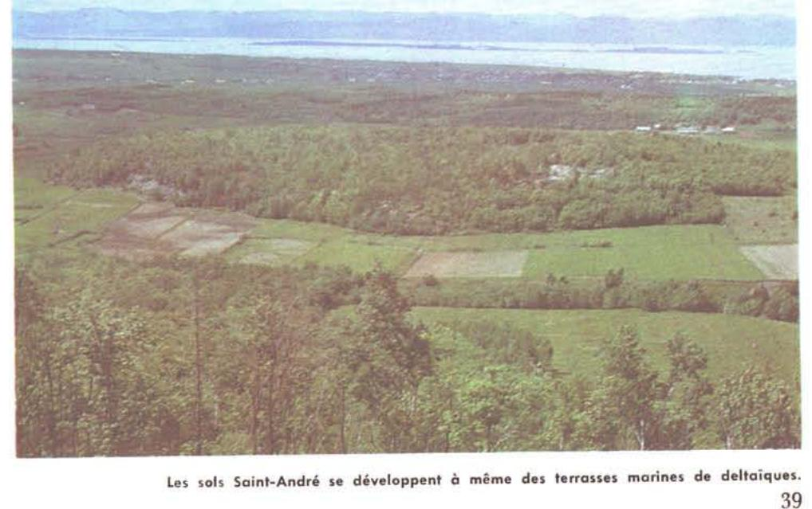
Les sols Saint-André se développent à même des terrasses marines et deltaïques.
- SÉRIE SAINT-NICOLAS (Ni, Ni-m)
Superficie : Bellechasse 24,800 acres; Montmagny 4,389 acres Topographie : pente simple, faible à modérée Drainage : bon à excessif Pierrosité : peu ou pas de pierres
On rencontre les sols Saint-Nicolas dans les paroisses échelonnées le long du fleuve entre les paroisses de Beaumont et de Montmagny. Les sols de cette série reposent généralement, à faible profondeur, sur un roc schisteux et gréseux de coloration brun rouge. Cette couleur confère d'ailleurs au profil de sol une caractéristique de différenciation avec celui du Saint-André.
Les sols de la série Saint-Nicolas ont un caractère résiduel et forment avec les éperons du roc originel un paysage unique dans le territoire à l'étude.
Les sols Saint-Nicolas supportent une végétation arborescente dont l'association est caractérisée à la fois par l'érable à sucre, le chêne, le hêtre et quelques conifères.
Au point de vue cartographique, les sols Saint-Nicolas ne forment qu'un seul type, soit le loam schisteux Saint-Nicolas, et une phase, le loam schisteux Saint-Nicolas, phase mince.
Profil du loam schisteux Saint-Nicolas
Horizon
Profondeur en pouces
Description
L-H
3- 0
Humus noir (5YR 2/1) de type moder; structure granulaire assez bien développée; friable et perméable; pH 5.0.
Loam sablo-schisteux brun rouge (2.5YR 4/4); structure granulaire modérément développée; racines abondantes; schistes plats, anguleux; et parfois émoussés; très friable et très perméable; pH 5.2.
Bf²
13-20
Sable grossier très schisteux à loam schisteux rouge pâle (10R 6/4); structure particulaire; fragments de schistes anguleux; très friable et très perméable; pH 5.4.
C
20 +
Sable grossier très schisteux brun rouge (5YR 4/4); structure particulaire; schistes anguleux; très friable et très perméable pH 5.8.
Fiche analytique d'un loam schisteux Saint-Nicolas
Horizon
Profondeur en pouces
Sable %
Limon %
Argile %
pH
C %
N %
Bases totales
C.E.
Saturation %
Aa
0- 6
58.3
23.1
18.6
4.1
2.00
0.14
1.67
19.67
8
Bf'
6-13
70.3
15.1
14.6
4.7
1.25
0.10
0.78
11.78
6
Bf²
13-22
78.3
11.1
10.6
5.3
0.61
0.05
1.78
6.78
26
C
22 +
81.3
11.1
7.6
5.4
0.11
0.02
2.68
6.68
40
Utilisation agricole
Les sols Saint-Nicolas, sauf dans le cas où ils montrent une phase mince, se prêtent avantageusement bien aux cultures spéciales ou sarclées. Ils possèdent généralement un bon pouvoir de rétention et répondent bien aux applications de fertilisants. Ils ont toutefois besoin d'un apport de matière organique pour maintenir une bonne structure et empêcher le sol de croûter.
SÉRIE RIVIÈRE-DU-LOUP (R, R-m)
Superficie : Bellechasse 11,092 acres; Montmagny 9,004 acres Topographie : pente irrégulière, modérée à très raide Drainage : bon Pierrosité : très pierreux à excessivement pierreux
Les premières collines appalachiennes sont comprises dans une zone de transition où s'entremêlent les dépôts d'origines diverses. Ces collines traversent tout le territoire de façon parallèle au fleuve et forment une bande plutôt étroite, passablement vallonnée, où les sols manifestent à la fois des caractères de till et un fort remaniement par l'eau. Les sols Rivière-du-Loup forment avec les sols Du Creux et Dessaint une caténa de drainage.
Le matériau originel est constitué d'un loam sableux et pierreux dans lequel les grès poreux et souvent décalcifiés prédominent. Généralement, l'épaisseur du matériau ne dépasse pas 5 pieds de profondeur et le roc s'approche souvent à quelque 2 pieds de la surface.
Les sols Rivière-du-Loup supportent un couvert forestier renouvelé et à végétation mixte. Le sapin, l'épinette, l'érable, le peuplier, le merisier et le hêtre représentent les espèces végétales dominantes dans la zone occupée par les sols Rivière-du-Loup-Du Creux et Dessaint.
Le loam sablo-graveleux Rivière-du-Loup a fait l'objet d'une phase appelée loam sableux Rivière-du-Loup, phase mince.
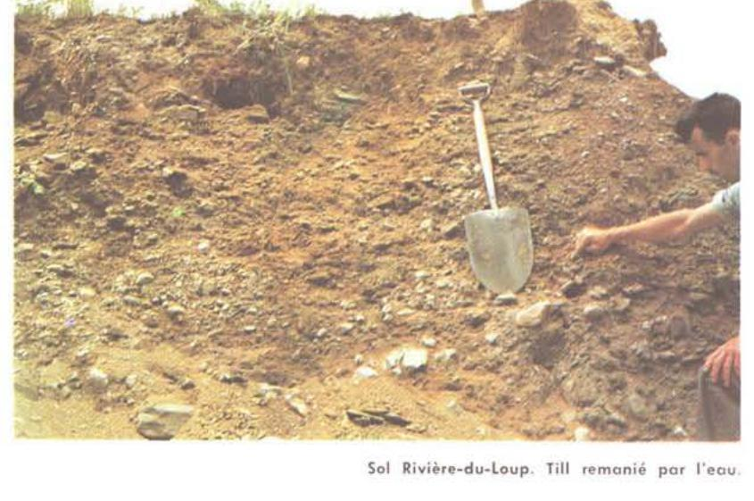
Sol Rivière-du-Loup. Till remanié par l'eau.
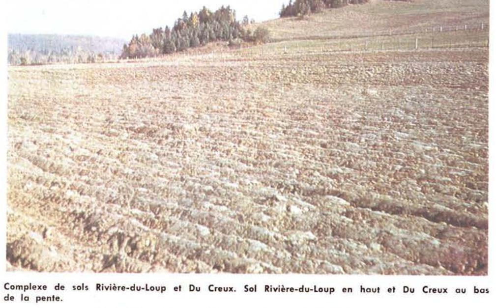
Complexe de sols Rivière-du-Loup et Du Creux. Sol Rivière-du-Loup en haut et Du Creux au bas de la pente.
Profil du loam sablo-graveleux Rivière-du-Loup
Horizon
Profondeur en pouces
Description
L-H
3- 0
Humus gris brun très foncé (10YR 3/2); fibreux et peu minéralisé; pH 5.0.
Loam sableux à loam brun vif (7.5YR 5/6); structure granulaire peu développée; parfois enrichi en humus; roches anguleuses; friable et perméable; pH 5.2.
Bf²
10-16
Loam sableux jaune brun (10YR 6/6); structure granulaire peu développée; roches anguleuses; friable et perméable; pH 5.4.
C
16 +
Loam sableux et pierreux brun jaune foncé (10YR 4/4); structure massive; nombreuses pierres anguleuses; compact mais s'effrite sous la pression des doigts; imperméable à l'eau; pH 5.8.
Fiche analytique d'un loam sableux Rivière-du-Loup
Horizon
Profon- deur en pouces
Sable %
Limon %
Argile %
pH
C %
N %
Bases totales
C.E.
Satura- tion %
L-H
3- 0
—
—
—
4.8
39.67
1.42
4.88
74.88
6
Ae
0- 3
54.4
31.1
14.5
4.8
2.23
0.11
1.10
23.10
4
Bf¹
3-10
64.4
24.1
11.5
5.0
1.09
0.11
0.46
11.46
9
Bf²
10-16
78.4
17.1
4.5
5.1
0.61
0.07
0.22
3.86
7
Cpj
16 +
57.4
29.1
13.5
5.3
0.25
0.02
0.21
2.70
9
Utilisation agricole
Les sols Rivière-du-Loup n'offrent pas un relief de tout repos et, précisément à cause de ce facteur, ils conviennent davantage à la grande culture qu'aux cultures sarclées. D'une façon générale et à l'instar de tous les sols bien drainés évoluant sur till, les sols Rivière-du-Loup sont pauvres et nécessitent un apport sérieux d'éléments fertilisants.
SÉRIE SAINT-BRUNO (B, B-m)
Superficie : Bellechasse 9,018 acres; Montmagny 11,279 acres Topographie : pente irrégulière, modérée à très raide Drainage : bon à excessif Pierrosité : modérément pierreux à très pierreux
Les sols de la série Saint-Bruno évoluent sur des dépôts fluvio-glaciaires, localisés exclusivement dans la région des Appalachhes et généralement apparentés à des formes de kame, d'esker et de terrasse à kame. Les dépôts couvrent des superficies variables, souvent irrégulières et généralement accrochés aux flancs des montagnes ou logées au fond des vallées.
Le matériau originel est celui d'un gravier sableux et pierreux, issu de quartz, de microgrès, de schistes ardoisiers et de matériaux granitiques. Très souvent, les matériaux empilés les uns par dessus les autres montrent des discontinuités lithologiques très prononcées.
L'épinette blanche, le sapin, le peuplier et l'érable rouge composent en grande partie le couvert végétal sur les sols Saint-Bruno.
Les sols Saint-Bruno ont fait l'objet d'un type et d'une phase : le loam sablo-graveleux Saint-Bruno et le loam sablo-graveleux Saint-Bruno, phase mince.
Profil du sol Saint-Bruno.
Profil du loam sablo-graveleux Saint-Bruno
Horizon
Profondeur en pouces
Description
L-H
3- 0
Humus mor et fibreux, brun foncé à noir (7.5YR 3/2 à 2/0); friable et perméable; présence de grosses roches en surface; pH 3.8.
Ae
0- 3
Loam sableux et pierreux de couleur grise (10YR 6/1); structure particulaire; limites irrégulières et souvent en poches; friable et perméable; pH 4.1.
Bhf
5- 8
Loam sablo-graveleux à sable loameux et graveleux de couleur brun jaune (10YR 5/6); structure finement granulaire à particulaire; friable et perméable; pH 5.2.
Bf
8-15
Loam sablo-graveleux à sable graveleux et pierreux de couleur jaune brun (10YR 6/6); structure particulaire; pierres nombreuses; friable et perméable; pH 5.5.
BC
15-24
Loam sablo-graveleux et pierreux, de couleur brun très pâle (10YR 7/3); structure particulaire; friable et perméable; pH 5.3.
C
24 +
Sable grossier, graveleux et pierreux, de couleur brun jaune clair (10YR 6/4); structure particulaire et parfois massive; friable et perméable; pH 5.0.
Les sols Saint-Bruno se développent parfois à même des matériaux fluvio-glaciaires déposés en forme d'esker.
Fiche analytique d'un loam sablo-graveleux et pierreux Saint-Bruno
Horizon
Profon- deur en pouces
Sable
Limon
Argile
pH
C
N
Bases totales
C.E.
Satura- tion %
%
%
%
%
%
Aa
0 - 6
60.1
32.0
7.9
4.5
7.99
0.31
8.18
30.18
27
Ae
6 - 8
63.1
27.0
9.9
4.5
0.14
0.03
1.22
8.22
14
Bhf
8-11
60.1
32.0
7.9
4.5
5.74
0.24
1.63
23.63
7
Bf
11-18
68.1
27.0
4.9
4.8
2.39
0.09
0.53
2.03
40
BC
18-24
81.1
14.0
4.9
4.9
1.28
0.05
0.51
1.51
33
C
24 +
88.1
8.0
3.9
3.9
0.14
0.02
0.61
1.11
55
Utilisation agricole
D'une façon générale, les sols Saint-Bruno ne conviennent que très peu à l'agriculture, en ce sens qu'ils ont d'une part un faible potentiel de fertilité et, d'autre part, un pouvoir de rétention trop limité. Ils sont un peu comme des paniers percés vis-à-vis l'eau et les fertilisants.
SÉRIE POHÉNÉGAMOOK (Po)
Superficie : Bellechasse 1,250 acres; Montmagny 825 acres
Topographie : pente irrégulière, modérée à très raide
Drainage : bon à excessif
Pierrosité : modérément pierreux à très pierreux
On rencontre les sols Pohénégamook sur les eskers, les kames et les terrasses à kame dans la zone appalachienne. Ils occupent toutefois, contrairement aux sols Saint-Bruno, la partie la plus altière des Appalaches.
Les sols Pohénégamook se différencient aussi des sols Saint-Bruno par le matériau originel. En effet, ce dernier est issu de grès, de schistes argileux friables et de schistes ardoisiers qui donnent à l'ensemble du substratum une texture de gravier sableux.
Plusieurs essences croissent sur les sols Pohénégamook. Les feuillus et les conifères qui supportent une bonne aération du sol se retrouvent un peu partout sur ces sols.
Profil du loam sablo-graveleux Pohénégamook
Horizon
Profondeur en pouces
Description
L-H
3- 0
Humus non minéralisé, noir (10YR 2/1); structure finement granulaire; friable et perméable; pH 4.8.
Ae
0- 3
Loam sablo-graveleux gris (10YR 6/1); structure particulaire; quelques pierres; limites irrégulières; friable et perméable; pH 4.7.
Bhf
3- 6
Loam sablo-graveleux brun jaune (10YR 5/4); structure particulaire et présence occasionnelle d'ortstein; pierres arrondies; friable et perméable; pH 5.1.
Bf
6-30
Sable loameux et graveleux gris brun clair (2.5YR 6/2); structure particulaire; très friable et très perméable; pH 5.5.
C
30 +
Sable graveleux et pierreux brun gris foncé (10YR 4/2); structure particulaire; stratification irrégulière et tronquée; quelques grès calcaires en profondeur; très friable et très perméable; pH 5.5.
Fiche analytique d'un loam sablo-graveleux Pohénégamook
Horizon
Profon- deur en pouces
Sable
Limon
Argile
pH
C
N
Bases totales
C.E.
Satura- tion %
%
%
%
%
%
L-H
3- 0
—
—
—
4.1
32.78
1.27
12.15
77.15
15
Ae
0- 4
42.3
38.1
19.6
3.9
0.97
0.12
3.30
13.30
24
Bhf
4- 7
53.3
31.1
15.6
4.2
5.48
0.28
1.04
29.04
3
Bf
7-25
61.3
26.1
12.6
5.1
1.34
0.07
0.61
4.61
13
C
25 +
68.3
23.1
8.6
5.3
0.58
0.02
0.61
2.61
23
Utilisation agricole
Les sols Pohénégamook ont à la fois un bas niveau de fertilité et un faible pouvoir de rétention vis-à-vis les fertilisants et l'eau. Moyennant certains correctifs appropriés, ils pourraient convenir à l'élevage du mouton et à la culture de la pomme de terre.
SÉRIE CALDER (Cal)
Superficie : Bellechasse 16,359 acres; Montmagny 6,158 acres
Topographie : pente irrégulière, faible à raide
Drainage : bon à excessif
Pierrosité : modérément pierreux à très pierreux
On retrouve les sols Calder surtout dans le comté de Bellechasse plus précisément dans les paroisses de Saint-Damien, de Saint-Philémon et d'Armagh. On les localise facilement sur les dépôts fluvio-glaciaires en forme de kame, d'esker ou de kame-terrasse, épandus au fond des vallées ou accrochés aux flancs des montagnes.
Le matériau originel est principalement constitué de gravier sableux et de sable, quoique la partie supérieure s'avère toutefois nettement plus sableuse que sa partie sous-jacente. Ces dépôts, issus de grès, de schistes ardoisiers et de quartzite acides, contiennent souvent de grosses roches appelées blocs erratiques.
Le couvert végétal arborescent qui peuple les sols Calder est constitué d'un mélange d'essences à feuilles caduques et de conifères. L'érable rouge et le sapin semblent cependant dominer dans l'association végétale.
Au point de vue cartographique, la série Calder n'a fait l'objet que d'un seul type de sol: le sable loameux Calder.
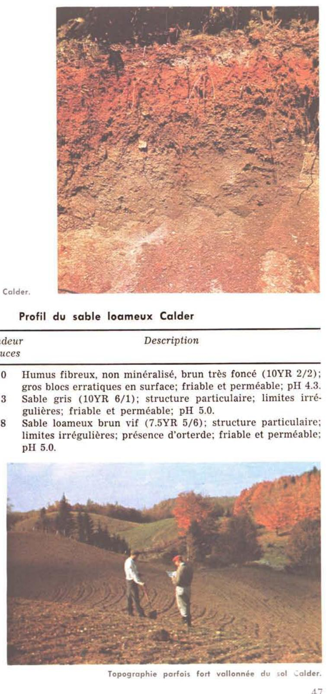
Profil du sol Calder.
Profil du sable loameux Calder
Horizon
Profondeur en pouces
Description
L-H
2- 0
Humus fibreux, non minéralisé, brun très foncé (10YR 2/2); gros blocs erratiques en surface; friable et perméable; pH 4.3.
Bf : 8-16 — Sable à sable loameux brun jaune (10YR 5/8); structure particulaire; friable et très perméable; pH 5.4.
Bc : 16-30 — Sable jaune brun (10YR 6/6); structure particulaire; très friable et très perméable; pH 5.6.
C : 30 + — Sable à sable graveleux brun gris (2.5Y 5/2); structure particulaire; stratification à lits obliques et souvent tronqués; pierres nombreuses en profondeur; friable et perméable; pH 5.5.
Fiche analytique d'un sable loameux Calder
Horizon
Profondeur en pouces
Sable
Limon
Argile
pH
C
N
Bases totales
C.E.
Satura-tion %
%
%
%
%
%
L-H
2- 0
—
—
—
4.8
37.30
1.43
11.18
66.18
16
Ae
0- 3
64.6
22.0
13.4
4.2
1.39
0.08
0.71
15.71
4
Bhf
3- 8
77.6
14.0
8.4
4.6
1.50
0.09
0.41
11.41
35
Bf
8-18
83.6
9.0
7.4
5.1
0.42
0.03
0.21
2.21
10
BC
18-30
86.6
9.0
4.4
5.4
0.36
0.02
0.21
0.71
30
C
30 +
84.6
11.0
4.4
5.5
0.22
0.02
0.21
0.41
50
Utilisation agricole
De tous les sols évoluant à même des dépôts fluvio-glaciaires, dans le territoire à l'étude, les sols Calder sont ceux qui se prêtent le mieux à l'agriculture, même s'ils nécessitent de fortes doses d'amendements et d'engrais. En plus d'être pauvres au point de vue fertilité, ils offrent encore une limitation sérieuse au point de vue façons culturales puisqu'ils montrent souvent un relief fort vallonné. Une fois corrigés et fertilisés, ils produisent bien, soit dans le domaine de la grande culture ou dans celui des cultures sarclées.
SÉRIE SAINT-ONÉSIME (O, O-m)
Superficie : Bellechasse 43,118 acres; Montmagny 93,219 acres Topographie : pente irrégulière, faible à raide Drainage : bon à excessif Pierrosité : très pierreux à extrêmement pierreux
On rencontre les sols Saint-Onésime dans la région des Appalaches mais exclusivement sur le versant nord. Ils se développent à même des tills au relief très capricieux. Leur profondeur varie généralement entre deux et six pieds. Sur le terrain, ils sont géographiquement associés aux sols des séries Mont-Carmel et Ixworth, avec lesquels d'ailleurs ils forment une caténa de drainage.
Le matériau originel du Saint-Onésime est constitué d'un till glaciaire à texture de loam pierreux, issu de grès de schistes ardoisiers, de quartzite et de schistes argileux. Les matériaux sont acides et s'apparentent grandement à ceux du groupe d'Armagh. De tous les tills rencontrés dans la région des Appalaches, celui-ci s'avère le plus pierreux.
Les feuillus, tels l'érable à sucre, l'érable rouge, le bouleau et le tremble, peuplent généralement les sols de la série Saint-Onésime. Parfois, des conifères, surtout l'épinette blanche et le sapin, entrent dans le tableau pour composer le couvert végétal arborescent.
Au point de vue cartographique, les sols de la série Saint-Onésime ont fait l'objet d'un type, le loam pierreux Saint-Onésime, et d'une phase, le loam pierreux Saint-Onésime, phase mince.
Profil du loam pierreux Saint-Onésime
Horizon
Profondeur en pouces
Description
L-H
3- 0
Humus fibreux, peu minéralisé, brun foncé (7.5YR 3/2); friable et perméable; pH 4.1.
Ae
0- 3
Loam grise rose (7.5YR 7/2); structure lamellaire peu développée; limites irrégulières; friable et perméable; pH 4.1.
Loam pierreux, brun foncé (7.5YR 4/4); structure granulaire peu développée; friable et perméable; pH 5.1.
BC
11-15
Loam pierreux, brun (10YR 4/3); structure polyédrique à agrégats moyens; ferme et peu perméable; pH 5.1.
Cqg
15 +
Loam pierreux, brun jaune foncé (10YR 4/4); mouchetures brun jaune (10YR 5/6); structure quasi massive; ferme mais éclatant sous la pression des doigts; fragipan avec enduits argileux et limoneux; pH 5.2.
Profil du sol Saint-Onésime.
Fiche analytique d'un loam pierreux Saint-Onésime
Horizon
Profon-deur en pouces
Sable %
Limon %
Argile %
pH
C %
N %
Bases totales
C.E.
Saturation %
L-H
3- 0
—
—
—
4.0
24.43
0.93
8.96
65.66
1
Ae
0- 3
47.0
32.2
20.8
4.1
1.00
0.09
0.91
12.91
7
Bhf
3- 6
49.0
38.2
12.8
4.3
3.84
0.18
0.61
22.61
2
Bf
6-11
53.0
32.2
14.8
4.6
1.50
0.08
0.61
9.61
6
BC
11-18
55.0
28.2
16.8
4.6
0.61
0.04
0.61
5.61
10
Cqg
18 +
47.0
30.2
22.8
4.7
0.36
0.02
1.30
5.30
24
Utilisation agricole
Deux obstacles majeurs limitent l'exploitation agricole des sols Saint-Onésime. Ces obstacles sont: la pente et les pierres. Lorsque l'une et l'autre ont un degré et une intensité faibles, il reste que les sols Saint-Onésime se prêtent bien à l'agriculture et surtout à la grande culture. En pareil cas, le chaulage des sols Saint-Onésime s'avère grandement nécessaire.
SÉRIE CHAPAIS (Ch, Ch-m)
Superficie : Bellechasse 79,601 acres; Montmagny 39,089 acres
Topographie : pente irrégulière, faible à très faible
Drainage : bon à excessif
Pierrosité : modérément pierreux à excessivement pierreux
Profil du sol Chapais.
Dans le territoire à l'étude, les sols Chapais se situent dans la partie la plus haute des Appalaches. Ils couvrent ainsi, d'une façon globale, les paroisses de Buckland, de Saint-Philémon, de Saint-Paul-du-Buton et de Sainte-Apolline. Ils présentent un relief plutôt vallonné et s'associent géographiquement aux sols Painchaud et Chabot.
Un till glaciaire, compact, pierreux et généralement profond de 2 à 4 pieds constitue le matériau originel des sols Chapais. Des schistes ardoisiers souvent calcaires, des microgrès et des quartzites, le tout géologiquement apparenté aux groupes de Rosaire et de Bennett, confèrent au matériau originel une texture de loam.
Des feuillus, surtout l'érable à sucre et l'érable rouge, peuplent les sites où les sols s'identifient aux types de la série Chapais.
Au point de vue cartographique, les sols Chapais ont fait l'objet d'un type, le loam sableux Chapais, et d'une phase, le loam sableux Chapais, phase mince.
Profil du loam sableux Chapais
Horizon
Profondeur en pouces
Description
L-H
2 - 0
Humus généralement peu minéralisé, brun gris très foncé (2.5YR 3/2); structure granulaire peu développée; pH 4.3.
Ae
0 - 3
Loam à loam sableux gris clair (10YR 7/1); structure granulaire peu développée; limites irrégulières; friable et perméable; pH 4.4.
Bhf
3 - 9
Loam sableux brun jaune (10YR 5/8); structure granulaire bien développée; limites irrégulières; quelques pierres; friable et perméable; pH 4.6.
Bf
9 - 15
Loam brun jaune clair (10YR 6/4); structure granulaire peu développée; limites irrégulières; quelques pierres; friable et perméable; pH 4.9.
Cq
15 +
Loam pierreux de couleur brune, jaune et grise; structure massive; compact mais s'effrite en blocs grossièrement polyédriques; imperméable; pH 5.2. Lorsque le sol est profond, il fait généralement effervescence.
Fiche analytique d'un loam sableux Chapais
Horizon
Profon- deur en pouces
Sable
Limon
Argile
pH
C %
N %
Bases totales
C.E.
Satura- tion %
%
%
%
L-H
2 - 0
—
—
—
3.9
48.02
1.60
4.12
157.12
2
Ae
0 - 3
55.0
33.8
11.2
4.1
0.86
0.07
2.55
13.55
18
Bhf
3 - 6
58.0
34.8
7.2
4.1
5.34
0.28
2.85
41.85
6
Bf
6 - 9
61.0
28.8
10.2
4.9
2.56
0.16
0.81
10.81
8
BC
9-15
62.0
26.8
11.2
5.1
0.64
0.05
0.51
1.51
34
Cq
15 +
65.0
22.8
12.2
5.0
0.83
0.05
0.71
1.71
41
Utilisation agricole
De tous les sols développés sur till appalachien, les sols Chapais s'avèrent les meilleurs tant au point de vue fertilité que façons culturales. Ils conviennent toutefois davantage à la grande culture qu'aux cultures sarclées, surtout à cause du climat. Même cultivables, les sols Chapais offrent néanmoins de sérieuses limitations puisqu'ils ont un relief fortement vallonné et une pierrosité souvent trop abondante.
- SÉRIE ARAGO (Ao, Ao-m)
Superficie : Bellechasse 19,338 acres; Montmagny 43,092 acres Topographie : pente irrégulière, faible à raide Drainage : bon Pierrosité : très pierreux à extrêmement pierreux
Les sols Arago s'étendent sur toute la partie sud des comtés de Bellechasse et de Montmagny, couvrant ainsi, de l'ouest à l'est, les paroisses de Sainte-Sabine, de Saint-Magloire, de Saint-Camille, de Saint-Juste, de Saint-Fabien, de Sainte-Lucie et de Lac Frontière. Les sols Arago forment une association caténaire avec ceux de Garneau et de Lafontaine. Sur toute leur étendue, ils montrent un relief fort vallonné. Seule la région de Saint-Juste-Lac-Frontière montre un relief modérément vallonnée.
Le matériau originel des sols Arago est un till glaciaire à texture de loam pierreux, issu de schistes ardoisiers acides, de microgrès et de quartzite. Le manteau de till a une profondeur variable mais il est généralement épais et compact.
Profil du sol Arago.Le sol Arago est généralement pierreux.
Le couvert végétal qui peuple les sols Arago se compose d'un mélange d'essences à feuilles caduques et de conifères. L'érable rouge, le hêtre, le bouleau, le sapin et l'épinette composent en grande partie la végétation arborescente dans cette partie du territoire.
Les sols de la série Arago ont fait l'objet d'un type, le loam pierreux Arago et d'une phase, le loam pierreux Arago, phase mince.
Les sols Arago, une fois déboisés, se prêtent surtout à la grande culture. Ils peuvent produire de bonnes récoltes lorsqu'ils sont soumis à une régie intelligente mais il reste tout de même que les sols Arago ont un faible pouvoir de fertilité. De plus, ils sont généralement pierreux et n'offrent que peu de continuité dans leur relief, ce qui les rend parfois difficiles à drainer.
2. PODZOL À GLEY
À ce sous-groupe appartiennent les séries Du Cap, Saint-Épiphane, Dessaint, Mont-Carmel, Painchaud et Garneau.
- SÉRIE DU CAP
Superficie : Montmagny 466 acres
Topographie : pente simple, très faible
Drainage : imparfait
Pierrosité : peu ou pas de pierres
Les sols du Cap occupent une superficie restreinte dans le territoire sous observation. Ils occupent, avec les sols Montmagny, la plaine d'alluvions récentes localisée en bordure du fleuve Saint-Laurent et qui s'étend de Berthier à la limite du comté de Montmagny. On les rencontre toutefois presqu'uniquement dans la paroisse de Cap Saint-Ignace.
Des alluvions littorales à texture de loam limono-argileux, reposant à quelques pieds des argiles marines, constituent le matériau originel des sols Du Cap.
Tous les sols de cette série supportent une végétation totalement herbacée. Quelques ormes et saules poussent encore mais isolément le long des levées ou des cours d'eau.
Les sols de la série Du Cap n'ont fait l'objet que d'un type, le loam limoneux Du Cap.
De tous les sols de la plaine du Saint-Laurent, les sols Du Cap semblent bien être ceux qui se prêtent le mieux au plus grand nombre de cultures. En effet, ils conviennent tout aussi bien à la grande culture qu'aux cultures sarclées. Ils ont un niveau de fertilité plutôt faible mais possèdent un bon pouvoir de rétention en eau et en fertilisants.
SÉRIE SAINT-ÉPIPHANIE (Épi)
Superficie : Bellechasse 1,117 acres; Montmagny 346 acres Topographie : pente simple, très faible à faible Drainage : imparfait Pierrosité : peu ou pas de pierres
Les sols Saint-Épiphanie sont très peu répandus dans les comtés à l'étude. On les retrouve surtout dans le comté de Bellechasse, notamment au contact des paroisses de La Durantaye et de Saint-Raphaël. Comme les sols Saint-Pacôme, avec lesquels ils sont d'ailleurs en association, ils figurent parmi les sols de la plaine du Saint-Laurent.
Les sols Saint-Épiphanie évoluent sur des dépôts marins et deltaïques à texture de sable issu de grès, de schistes ardoisiers et de quartzite. Le matériau originel atteint des profondeurs variables et repose généralement sur des sédiments marins à texture fine.
Des feuillus tels que le tremble, le merisier et le peuplier composent, avec le sapin et l'épinette, la végétation arborescente actuelle sur les sols Saint-Épiphane.
Les sols Saint-Épiphane n'ont fait l'objet que d'un seul type, soit le loam sableux Saint-Épiphane.
Profil du loam sableux Saint-Épiphane
Horizon
Profondeur en pouces
Description
L-H
2- 0
Humus fibreux et peu minéralisé, noir (5YR 2/1); traces de brûlé; pH 4.2.
Aeg
0- 5
Sable loameux, gris rose (7.5YR 6/2); structure particulaire; limites irrégulières; friable et perméable; pH 4.4.
Bhfc
5-12
Sable loameux, brun foncé (7.5YR 4/4); structure particulaire et concrétions d'ortstein; limites sinueuses; friable et perméable; pH 5.0.
On peut classer les sols Saint-Épiphane parmi les sols pauvres de la région. Dans le profil, ils montrent un lessivage intense du sol qui se traduit par un horizon blanchi et épais sous la couche de surface.
Les sols Saint-Épiphane se prêtent bien aux façons culturales puisqu'ils sont libres de pierres et légèrement en pente. Toutefois, pour les faire produire, il est nécessaire de les amender et de les fertiliser généreusement.
SÉRIE DESSAINT (D)
Superficie : Bellechasse 5,426 acres; Montmagny 1,303 acres
Topographie : pente simple, très faible
Drainage : imparfait à mauvais
Pierrosité : très pierreux à extrêmement pierreux
On rencontre les sols Dessaint dans la zone vallonnée des tills remaniés sise en bordure des Appalaches. On les retrouve, en association avec les sols Rivière-du-Loup et Du Creux, principalement dans les paroisses d'Honfleur, de Saint-Gervais, de Saint-Raphaël, de La Durantaye, de Saint-François, de Saint-Pierre et de Cap Saint-Ignace.
Le matériau originel des sols Dessaint est constitué d'un till pierreux remanié par l'eau, à texture de loam et contenant parfois des lentilles d'argile. L'eau semble avoir remanié le till appalachien jusqu'à une profondeur moyenne de 30 pouces.
En terrain boisé, une végétation mixte de feuillus et de conifères peuple les sols Dessaint. L'érable, le bouleau, le tremble, l'épinette et le sapin composent en grande partie le couvert forestier établi sur ces sols.
Le loam pierreux Dessaint identifie tous les sols Dessaint rencontrés dans la région à l'étude.
Profil du loam pierreux Dessaint
Horizon
Profondeur en pouces
Description
L-H
3- 0
Humus fibreux, non minéralisé, brun gris très foncé (10YR 3/2); nombreuses pierres; pH 4.5.
Aeg
0- 4
Loam sableux et pierreux, brun gris clair (10YR 6/2); mouchetures brun pâle peu contrastantes; structure particulaire; limites irrégulières; pH 4.8.
Bfg
4-17
Sable loameux et pierreux à loam sableux et pierreux, brun gris foncé (10YR 4/2); mouchetures brun jaune (10YR 6/6); structure particulaire; compact; friable et peu perméable; pH 5.4.
Cqjg'
17-30
Sable loameux et pierreux, brun pâle (10YR 6/3); mouchetures jaune brun (10YR 6/6); structure particulaire; compact; présence de bandes argileuses et de lentilles de sable; friable et perméable; pH 5.8.
Cqjg²
30 +
Loam sableux et pierreux, brun jaune foncé (10YR 4/4); structure massive; imperméable; repose sur till appalachien et compact; pH 6.2.
Fiche analytique d'un loam pierreux Dessaint
Horizon
Profondeur en pouces
Sable %
Limon %
Argile %
pH
C %
N %
Bases totales
C.E.
Saturā- tion %
Aa
0- 6
46.8
38.0
15.2
4.1
25.05
0.07
5.38
45.38
11
Bfg
6-16
58.8
24.0
17.2
4.4
2.03
0.14
2.77
13.77
20
Cqjg'
16-25
70.8
18.0
11.2
5.2
0.44
0.03
0.71
4.21
16
Cqjg²
25 +
68.8
16.0
15.2
5.4
2.73
0.01
2.44
4.44
54
Utilisation agricole
Parce qu'ils sont très pierreux, mal drainés et peu fertiles, les sols Dessaint conviennent généralement peu à l'agriculture mécanisée. Il y a toutefois possibilité de les aménager, selon un mode de fertilisation approprié, pour fin de pacage durant les mois de juillet et d'août, période souvent fertile en sécheresses.
- SÉRIE MONT-CARMEL (Ca)
Superficie : Bellechasse 35,671 acres; Montmagny 47,428 acres Topographie : pente irrégulière, faible à raide Drainage : imparfait Pierrosité : très pierreux à extrêmement pierreux
On retrouve les sols Mont-Carmel en association avec les sols Saint-Onésime et Ixworth. Les sols de la série Mont-Carmel occupent généralement les pentes à micro-relief bosselé, pentes que l'on rencontre un peu partout sur tout le versant nord des Appalaches.
Un till glaciaire, à texture de loam et issu de grès, de schistes ardoisiers, de schistes argileux et de quartzite, constitue le matériau originel du Mont-Carmel. Ce till glaciaire, très dur et très pierreux, montre de plus un fragipan modérément dense et quasi imperméable à l'eau, contribuant sans doute à rendre, en maints endroits, le sol sourceux et boueux.
Le sapin, l'épinette, le tremble et le peuplier composent en grande partie le couvert végétal arborescent sur les sols Mont-Carmel.
Tous les sols Mont-Carmel appartiennent à la même unités taxonomique : le loam pierreux Mont-Carmel.
Profil du loam pierreux Mont-Carmel
Horizon
Profondeur en pouces
Description
L-H
3- 0
Humus peu minéralisé, brun foncé (10YR 4/2); pierres en surface; friable; pH 5.0.
Loam caillouteux, brun pâle (10YR 6/3); mouchetures distinctes comme ci-dessus; structure massive; fragipan compact qui se brise en plaquettes; imperméable; pH 6.3.
Fiche analytique d'un loam pierreux Mont-Carmel
Horizon
Profon-deur en pouces
Sable
Limon
Argile
pH
C
N
Bases totales
C.E.
Satura-tion %
%
%
%
%
%
L-H
0- 5
50.8
28.2
21.0
5.1
1.59
0.09
3.61
10.11
35
Aeg
5- 7
48.8
30.2
21.0
5.0
0.39
0.02
3.30
6.80
48
Bfg
7-10
52.8
30.2
17.0
6.0
0.44
0.02
3.85
5.85
65
Cg¹
10-15
48.8
30.2
21.0
6.3
0.11
0.03
5.45
6.45
84
Cg²
15 +
48.8
30.2
21.0
7.0
0.25
0.01
5.55
5.55
100
Utilisation agricole
Les sols Mont-Carmel sont très pierreux et difficiles à drainer, par conséquent peu propices à la grande culture. Pour obvier à ces obstacles sérieux, il semble bien que l'établissement de pâturages puisse être le meilleur usage à conseiller sur ces sols développés sur till appalachien.
SÉRIE PAINCHAUD (Pai)
Superficie : Bellechasse 26,587 acres; Montmagny 28,143 acres
Topographie : pente irrégulière, faible à modérée
Drainage : imparfait
Pierrosité : très pierreux à excessivement pierreux
On rencontre les sols Painchaud sur de grandes étendues dans le secteur appalachien où ils figurent en association caténaire avec les sols Chapais et Chabot. Dans ce paysage, ils occupent souvent les pentes longues et unies des flancs de montagnes. On les retrouve de temps en temps en association géographique avec des terres noires minces et bien décomposées.
Le matériau originel des sols Painchaud est un till glaciaire, compact, à texture de loam pierreux, issu de schistes ardoisiers, friables et souvent calcaires en profondeur, de microgrès et de quartzite. La profondeur des matériaux varie avec le relief capricieux du roc sous-jacent.
L'érablière domine généralement l'association végétale que supporte les sols Painchaud. Toutefois, lorsque les conditions de drainage s'avèrent critiques, des conifères, le cédre en particulier, s'implantent de façon prépondérante.
Au point de vue cartographique, les sols Painchaud n'ont fait l'objet que d'un type, le loam pierreux Painchaud.
Profil du loam pierreux Painchaud
Horizon
Profondeur en pouces
Description
Ah
0- 5
Loam gris très foncé (2.5Y 3/0); structure granulaire bien développée; pierres en surface; parfois surmonté de terre noire mince bien décomposée; très friable; pH 5.9.
Aegj
5- 6
Loam gris clair (2.5Y 7/2); peu visible; friable et perméable.
Bfg
6- 8
Loam gris brun clair (2.5Y 6/2); structure granulaire; mouchetures peu visibles; limites sinueuses; quelques fragments gréseux et schisteux; très friable et perméable; pH 6.0.
Bg 8-15 Loam gris clair (2.5Y 7/2); mouchetures brun pâle (10YR 6/3); structure granulaire peu développée; quelques pierres; friable et perméable; pH 6.1.
Cg 15 + Loam gris clair (5Y 7/2); structure granulaire à polyédrique, peu développée; mouchetures peu distinctes; repose sur roc ou till compact et souvent calcaire à environ 20 pouces; friable et perméable; pH 6.1.
Fiche analytique d'un loam pierreux Painchaud
Horizon
Profondeur en pouces
Sable %
Limon %
Argile %
pH
C %
N %
Bases totales
C.E.
Saturation %
Ah
0-5
35.2
50.0
14.8
5.1
2.92
0.49
8.68
24.23
35
Bfgj
5-8
39.2
50.0
10.8
5.4
3.31
0.23
3.20
17.12
18
Bg
8-15
47.2
42.0
10.8
5.5
1.61
0.12
1.56
10.20
15
BCg
15-20
47.2
36.0
16.8
5.6
0.58
0.06
0.83
4.95
16
Cg
20 +
51.2
36.0
12.8
5.7
0.36
0.04
0.86
3.83
26
Utilisation agricole
De tous les sols à drainage imparfait et développés sur till glaciaire, les sols Painchaud s'avèrent les meilleurs surtout en ce qui concerne la grande culture. Les deux limitations inhérentes aux sols de la série Painchaud, limitations souvent sévères, résident dans les conditions relatives au drainage et à la pierrosité.
- SÉRIE GARNEAU (Ga)
Superficie : Bellechasse 22,278 acres; Montmagny 23,514 acres
Topographie : pente irrégulière, faible à raide
Drainage : imparfait
Pierrosité : très pierreux à extrêmement pierreux
On rencontre les sols Garneau principalement sur le versant sud des Appalaches, en association caténaire avec les sols Arago et Lafontaine. Les sols Garneau occupent généralement les pentes au relief variablement accentué et pigmenté de gros blocs erratiques.
Le matériau originel des sols Garneau est un till glaciaire, à texture de loam pierreux, issu de schistes ardoisiers verts, de microgrès et de quartzite. Les matériaux, généralement acides, atteignent des profondeurs variables et dépendantes en cela de la proximité du roc sous-jacent.
Le sapin et l'épinette composent en grande partie le couvert végétal, arborescent et actuel, sur les sols Garneau.
Les sols de la série Garneau n'ont fait l'objet que d'un seul type, soit le loam pierreux Garneau.
Profil du loam pierreux Garneau
Horizon
Profondeur en pouces
Description
L-H
2- 0
Humus fibreux, peu minéralisé, brun gris très foncé (10YR 3/2); friable; pH 4.0.
Aecgj
0- 4
Loam sableux, brun pâle (10YR 6/3); structure quasi particulaire; limites nettes et sinueuses; mouchetures peu visibles; friable et perméable; pH 4.3.
Bhfg
4- 5
Loam sableux, brun foncé (10YR 4/4); structure granulaire bien développée; mouchetures peu visibles; limites sinueuses et discontinus; quelques pierres; friable et perméable; pH 4.6.
Bfg
5- 8
Loam sableux, brun jaune foncé (10YR 4/4); structure granulaire peu développée; mouchetures distinctes brun jaune (10YR 5/4); quelques pierres; friable et perméable; pH 4.8.
BCg
8-14
Loam sableux, brun foncé (10YR 4/2); structure granulaire peu développée; mouchetures distinctes et nombreuses, brun jaune (10YR 5/6); quelques pierres; friable et perméable; pH 5.0.
Cqg
14 +
Loam pierreux, brun foncé (10YR 4/3) et gris brun clair (10YR 6/2); structure massive; mouchetures distinctes; fragipan dur et éclatant en blocs polygonaux sous la pression des doigts; compact et imperméable; pH 5.5.
Fiche analytique d'un loam pierreux Garneau
Horizon
Profondeur en pouces
Sable %
Limon %
Argile %
pH
C %
N %
Bases totales
C.E.
Satura- tion %
Aa
0- 6
41.6
54.0
4.4
4.9
7.66
0.36
6.36
23.86
26
Bhfg
6- 8
49.6
50.0
0.4
5.0
3.62
0.22
1.94
17.04
11
Bfg
8-14
45.6
52.0
2.4
5.1
1.78
0.00
1.40
9.30
15
BCg
14-20
61.6
34.0
4.4
5.4
0.94
0.07
1.21
5.81
20
Cqg
20 +
57.2
32.0
10.8
5.4
0.25
0.03
1.61
4.71
34
Utilisation agricole
Une pierrosité abondante, des conditions difficiles de drainage et un faible niveau de fertilité rendent les sols Garneau peu aptes à une agriculture grandement mécanisée. C'est sans doute là une des raisons primordiales qui a milité en faveur du retour à la forêt de tous les sols possédant les limitations ci-haut mentionnées.
D. RÉGOSOLS
Les sols d'origine alluvionnaire, localisé le long des cours d'eau, montrent des profils très peu évolués, généralement jeunes, de texture extrêmement variable et de relief non moins capricieux. Ils appartiennent généralement au grand groupe des régosols et au sous-groupe des régosols à gley.
RÉGOSOL À GLEY
ALLUVIONS (All)
Superficie : Bellechasse 6,969 acres; Montmagny 4,974 acres.
Les alluvions non différenciées ont une texture très variable qui va de l'argile au sable loameux et pierreux. Elles montrent généralement des conditions de drainage qui se rapprochent de l'hydromorphie et possèdent parfois un horizon d'humus bien minéralisé en surface.
Une fois déboisés et livrés à l'agriculture, les terrains alluvionnaires servent presqu'uniquement au pâturage. En zone appalachienne, les sols alluvionnaires sont généralement trop pierreux pour l'agriculture.
E. ORGANOSOLS
La classification actuelle des sols organiques demeure encore vague et les critères à la base du système de classification sujets à changements. Les données recueillies, en ce qui concerne les sols organiques, ne permettent généralement pas d'établir d'une façon adéquate une classification écologique précise telle que proposée au dernier congrès national des sols tenu à Québec en 1965.
Sur la carte pédologique couvrant les comtés de Bellechasse et de Montmagny, les sols organiques ont tout de même été classés selon la méthode conventionnelle qui consiste à les grouper selon le degré de décomposition de l'humus, en terres noires, en terres noires tourbeuses et en tourbes.
TERRE NOIRE (TN1 et TN1-m)
Superficie : Bellechasse 3,791 acres; Montmagny 5,480 acres.
Les sols organiques inclus dans ce groupe ont un humus bien décomposé. Ils sont généralement mal drainés, peu profonds et lorsqu'ils ont moins de 20 pouces d'épaisseur, ils entrent dans la phase mince (TN1-m).
TERRE NOIRE TOURBEUSE (TN2)
Superficie : Bellechasse 2,926 acres; Montmagny 585 acres.
Les sols organiques de ce groupe montrent un humus partiellement décomposé. Ils sont souvent mal drainés et parfois pierreux.
Tourbe (T)
Superficie : Bellechasse 439 acres; Montmagny 3,714 acres.
Dans ce groupe entrent tous les sols organiques à humus brut ou grossier. Ils sont généralement très mal drainés, parsemés de petits lacs et atteignent parfois plus de 10 pieds d'épaisseur.
On rencontre, un peu partout dans le territoire à l'étude, des terrains où le roc affleure à la surface. Sur la carte pédologique, ces terrains sont délimités et identifiés comme affleurements rocheux.
Les marécages identifient les endroits où l'eau séjourne à peu près de façon permanente. Les sols marécageux contiennent généralement un bon pourcentage de matière organique grossière.
III. Possibilités agricoles des sols.
Les sols des comtés de Bellechasse et de Montmagny ont des aptitudes différemment prononcées pour l'agriculture. À cette fin, ils ont été classés, sauf en ce qui concerne les sols organiques, en 5 classes différentes. Les sols des 3 premières classes sont considérés, à des degrés divers, propices à l'agriculture; la classe suivante groupe des sols qui peuvent être utilisés pour fin de pacage et la dernière classe désigne des sols impropres à l'agriculture.
À chaque classe, soit les classes 2, 3, 4, 5 et 7 de l'« Aperçu de la classification canadienne des possibilités agricoles des sols », s'accolent des sous-classes désignées par les symboles D, E, F, I, M, P, R, S, T, et W (3).
D — Structure ou perméabilité indésirable.
E — Érosion.
F — Bas niveau de fertilité.
I — Inondation.
M — Faible pouvoir de rétention en eau.
P — Pierrosité.
R — Faible profondeur sur roc.
S — Ensemble de caractéristiques indésirables.
T — Pente et relief.
W — Excès d'humidité permanente.
Dans le territoire à l'étude, il n'y a pas de sols qui appartiennent aux classes 1 et 6 mentionnées dans « Aperçu de la classification canadienne des possibilités agricoles des sols ».
Sols de la classe 2
Les sols de la classe 2 ont une bonne capacité de retention d'humidité, sont bien pourvus en éléments nutritifs, se prêtent bien à un grand nombre de cultures, donnent des rendements moyens à élevés mais nécessitent parfois des mesures de conservation d'application facile.
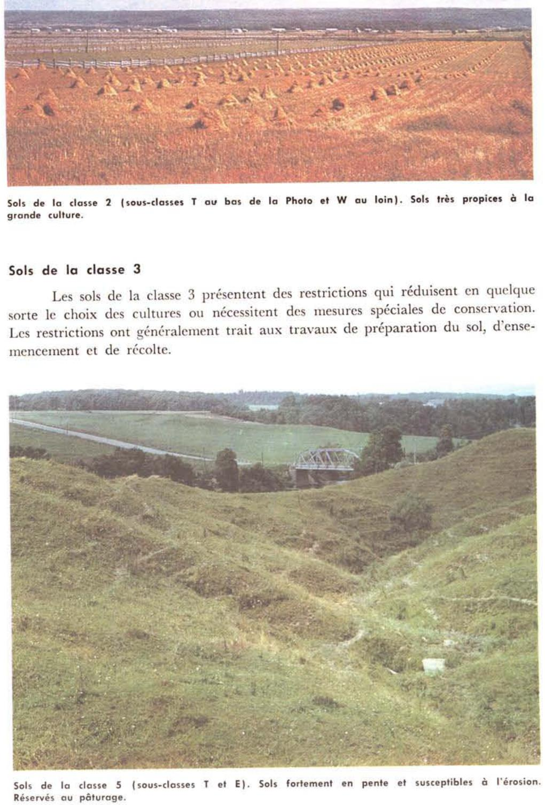
Sols de la classe 2 (sous-classes T au bas de la Photo et W au loin). Sols très propices à la grande culture.
Sols de la classe 3
Les sols de la classe 3 présentent des restrictions qui réduisent en quelque sorte le choix des cultures ou nécessitent des mesures spéciales de conservation. Les restrictions ont généralement trait aux travaux de préparation du sol, d'ensemencement et de récolte.
Sols de la classe 5 (sous-classes T et E). Sols fortement en pente et susceptibles à l'érosion. Réservés au pâturage.
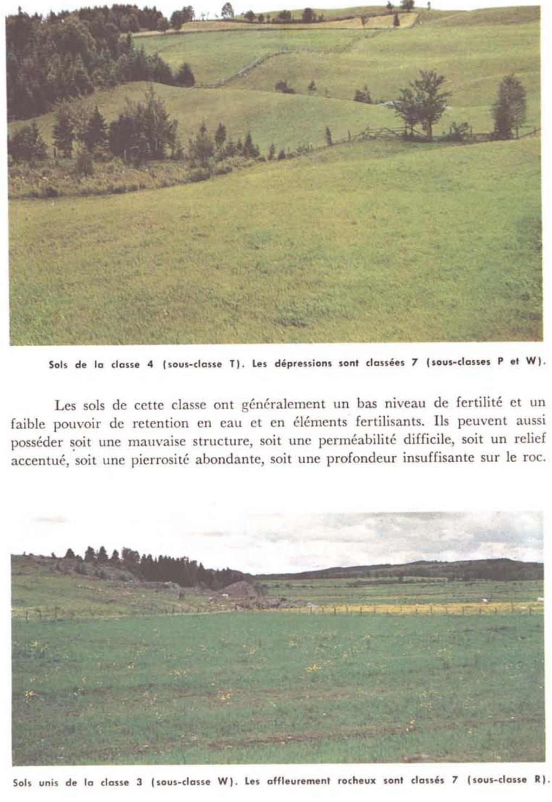
Sols de la classe 4 (sous-classe T). Les dépressions sont classées 7 (sous-classes P et W).
Les sols de cette classe ont généralement un bas niveau de fertilité et un faible pouvoir de rétention en eau et en éléments fertilisants. Ils peuvent aussi posséder soit une mauvaise structure, soit une perméabilité difficile, soit un relief accentué, soit une pierrosité abondante, soit une profondeur insuffisante sur le roc.
Sols unis de la classe 3 (sous-classe W). Les affleurement rocheux sont classés 7 (sous-classe R).
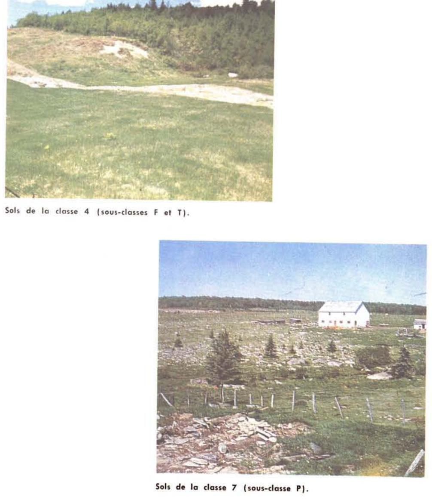
Sols de la classe 4 (sous-classes F et T).Sols de la classe 7 (sous-classe P).
Sols de la classe 4
Les sols de la classe 4 présentent des limitations sérieuses qui réduisent considérablement le choix des cultures ou nécessitent l'application de mesures spéciales de conservation. Ils conviennent à quelques cultures seulement. Leurs limitations résident soit dans une pierrosité abondante, soit dans une aération trop grande du sol, soit dans un relief accentué, soit dans un très bas niveau de fertilité ou dans un trop faible pouvoir de rétention en eau et en éléments fertilisants.
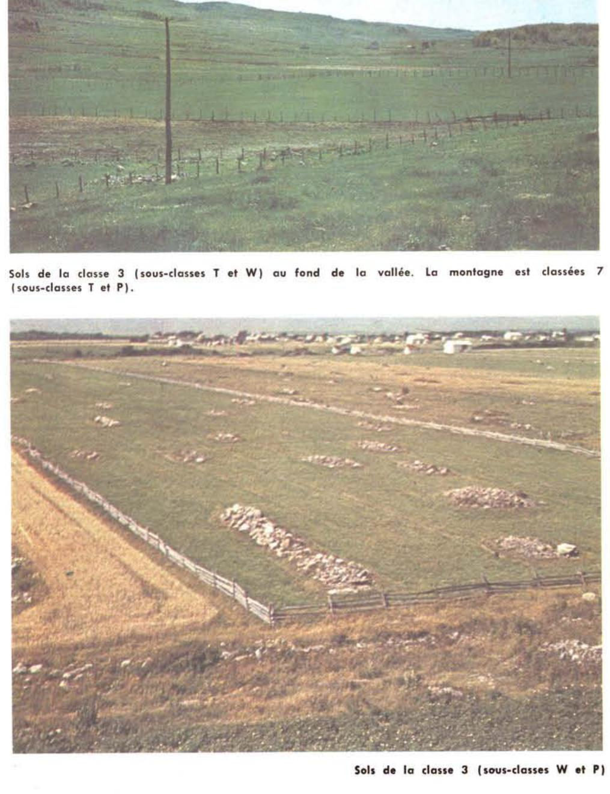
Sols de la classe 3 (sous-classes T et W) au fond de la vallée. La montagne est classée 7 (sous-classes T et P).Sols de la classe 3 (sous-classes W et P)
Sols de la classe 5
Les sols de la classe 5 ne conviennent qu'à la production de plantes fourragères vivaces. Ils sont cependant susceptibles d'amélioration mais ne conviennent pas à une agriculture mécanisée.
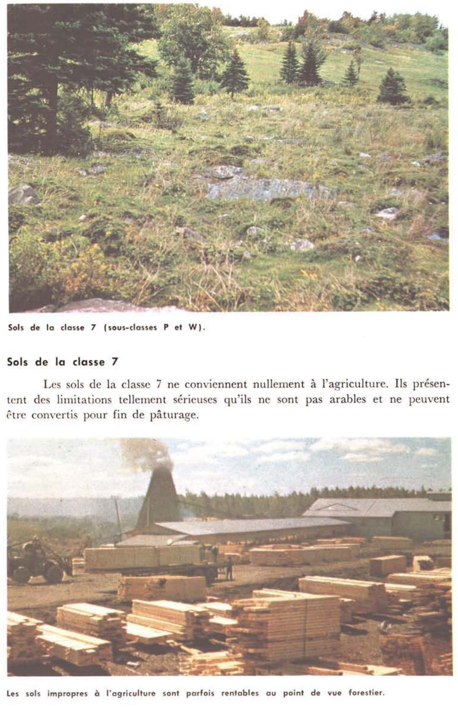
Sols de la classe 7 (sous-classes P et W).
Sols de la classe 7
Les sols de la classe 7 ne conviennent nullement à l'agriculture. Ils présentent des limitations tellement sérieuses qu'ils ne sont pas arables et ne peuvent être convertis pour fin de pâturage.
Les sols impropres à l'agriculture sont parfois rentables au point de vue forestier.
Classement des sols suivant leurs possibilités agricoles
Un classement généralisé de tous les sols à l'étude apparaît au tableau 4. Au même tableau, les mêmes sols trouvent la place qu'ils pourraient occuper dans le système québécois des possibilités agricoles des sols (9).
Il est évident qu'une série de sol puisse appartenir à plus d'une classe puisque l'intensité de la sous-classe (limitation) détermine en quelque sorte la classe correspondante. Au niveau de l'unité cartographique ou du type de sol, les limitations ou les restrictions peuvent varier et c'est dans ce sens que la sous-classe peut influencer le choix de la classe.
TABLEAU 4. — Classement des sols des comtés de Bellechasse et de Montmagny selon leurs possibilités agricoles.(1)
Type de sol
Systèmes
canadien
québécois
Argile Kamouraska
2W à 3W
2d
Loam argileux La Pocatière
2W à 3T
2d à 3e
Loam limoneux Montmagny
2W
2d
Loam limoneux Du Cap
2F
2a
Loam Du Creux
3W à 4P
3d à 3c
Loam humifère et pierreux Ixworth
5W à 7P
4d à 6
Loam pierreux Chabot
4W à 7P
3d à 6
Loam pierreux Dessaint
4D à 7P
3d à 6
Loam pierreux Lafontaine
5W à 7P
4d à 6
Loam pierreux Mont-Carmel
3W à 7P
3d à 6
Loam pierreux Painchaud
3W à 5P
3d à 4c
Loam pierreux Garneau
4P à 7P
4c à 6
Loam Pierreux Saint-Onésime
4P à 7P
4c à 6
Loam pierreux Saint-Onésime, phase mince
5R à 7P
5m à 6
Loam pierreux Arago
4P à 7P
4c à 6
Loam pierreux Arago, phase mince
5R à 7P
5m à 6
Loam sableux et pierreux Chapais
3F à 5T
3b à 5f
Loam sableux et pierreux Chapais, phase mince
5R à 7R
5m à 6
Loam sableux et pierreux Mawcook
3W à 4P
3d à 3c
Loam sableux Saint-Épiphane
3F à 4W
3b à 3d
Loam schisteux Saint-Nicolas
3F
3b
Loam schisteux Saint-Nicolas, phase mince
4F à 5M
4b
Loam sablo-graveleux Saint-André
3S
3b
Loam sablo-schisteux Saint-André
3S
3b
Loam sablo-graveleux Saint-André, phase mince
4S à 5M
4b
Loam sablo-graveleux Rivière-du-Loup
4S à 7P
4b à 6
Loam sablo-graveleux Rivière-du-Loup, phase mince
5R à 7R
5m à 6
Loam sablo-graveleux Saint-Bruno
4S à 7T
4b à 6
Loam sablo-graveleux Saint-Bruno, phase mince
5R
5m
Loam sablo-graveleux Pohénégamook
4S à 5T
4b à 5g
Sable loameux Calder
3F à 5T
3b à 5g
Sable loameux Saint-Pacôme
4S
4b
Alluvions non différenciées
2F à 5W
2a à 4d
(1) Classement des sols selon leurs possibilités d'utilisation agricole, Auguste Mailloux, Armand Dubé et Lauréan Tardif, Cahiers de géographie, vol. VIII, no. 16, Avril-Septembre 1964.
TABLEAU 5. — Données planimétriques relatives aux sols des comtés de Bellechasse et de Montmagny.
Type de sol
Superficie en acres
Bellechasse
Montmagny
Argile Kamouraska
10,693
18,884
Loam argileux La Pocatière
2,341
3,604
Loam limoneux Montmagny
399
5,599
Loam limoneux du Cap
—
466
Loam Du Creux
4,336
838
Loam humifère et pierreux Ixworth
3,192
7,461
Loam pierreux Chabot
4,336
6,078
Loam pierreux Dessaint
5,426
1,303
Loam pierreux Lafontaine
5,945
5,373
Loam pierreux Mont-Carmel
35,671
47,428
Loam pierreux Painchaud
26,587
28,143
Loam pierreux Garneau
22,278
23,514
Loam pierreux Saint-Onésime
39,288
36,056
Loam pierreux Saint-Onésime, phase mince
3,830
57,163
Loam pierreux Arago
17,955
24,326
Loam pierreux Arago, phase mince
1,383
18,766
Loam sableux et pierreux Chapais
33,423
20,655
Loam sableux et pierreux Chapais, phase mince
46,178
18,434
Loam sableux et pierreux Mawcook
8,858
2,700
Loam sableux Saint-Épiphanie
1,117
346
Loam schisteux Saint-Nicolas
18,939
2,673
Loam schisteux Saint-Nicolas, phase mince
5,861
1,716
Loam sablo-graveleux Saint-André
16,093
7,235
Loam sablo-schisteux Saint-André
2,474
3,392
Loam sablo-graveleux Saint-André, phase mince
3,046
2,062
Loam sablo-graveleux Rivière-du-Loup
9,496
4,974
Loam sablo-graveleux Rivière-du-Loup, phase mince
1,596
4,030
Loam sablo-graveleux Saint-Bruno
8,991
10,574
Loam sablo-graveleux Saint-Bruno, phase mince
27
705
Loam sablo-graveleux Pohénégamook
1,250
825
Sable loameux Calder
16,359
6,158
Sable loameux Saint-Pacôme
838
27
Alluvions non différenciées
6,969
4,974
Terre noire
1,849
4,642
Terre noire, phase mince
1,942
838
Terre noire tourbeuse
2,926
3,714
Tourbe
439
585
Affleurements rocheux
4,855
9,549
Marécages
8,712
15,840
Total:
385,898
413,059
ANNEXE
Méthodes analytiques
Dans le présent rapport apparaissent quelques-uns des résultats analytiques obtenus au cours des analyses faites au laboratoire provincial des sols de La Pocatière, sous la direction de Monsieur Gérard Godbout, agronome. Les méthodes suivies apparaissent ci-contre.
Tous les sols ont été séchés à l'air puis passés au tamis à trous ronds de 2 mm avant analyse.
Refus: tout ce qui reste sur le tamis à trous ronds de 2 mm.
Analyse granulométrique: méthode Bouyoucos.
Après la dispersion, on verse le contenu du cylindre sur un tamis U.S.B.S. No 140; on lave à l'eau courante. Toutes les particules de 0.1 mm passent à travers le tamis.
On fait sécher les particules de 0.1 mm et on tamise :
Texture
Dimension des particules
Tamis U.S.B.S.
Sable très grossier
2 à 1 mm
No 18
Sable grossier
1 à 0.5 mm
35
Sable moyen
0.5 à 0.25 mm
60
Sable fin
0.25 à 0.10 mm
140
Sable très fin
0.10 à 0.05 mm
Carbone organique: combustion humide dans une solution de bichromate de sodium 4 N et H2SO4 36 N. Au lieu de chauffer sur plaque électrique, on chauffe durant une heure sur bain-marie à ébullition. Dosage de l'excès de bichromate par une solution 0.2 N de sulfate ferreux ammoniacal en présence d'acide phosphorique et de diphenylamine.
Matière organique: carbone organique multiplié par 1.724.
Azote: méthode Kjeldahl (A.O.A.C. 1950); absorption de l'ammoniaque dans une solution d'acide borique à 4%; dosage direct par H2SO4 0.1 N, en présence d'un indicateur mélangé (rouge de méthyle et bleu de méthylène).
Réaction ou pH: appareil de Beckman (électrode de verre): 5 grammes de sol + 5 ml d'eau distillée.
Phosphore:
total: méthode de Truog; fusion avec Na2CO3; coloration par une solution de ZnCl2 fraîchement préparée; comparaison de la couleur au photocolorimètre à filtre Cenco-Sheard-Sanford.
assimilable: méthode de Bray; extraction par une solution de HCl 0.1 N et NH4F 0.03 N; coloration par l'acide 1-2-4 amino-naphtol sulfonique; comparaison de la couleur au photocolorimètre à filtre Cenco-Sheard-Sanford.
10. Hydrogène échangeable: extraction par une solution d'acétate de calcium 0.5 N (méthode officielle: Jour. A.O.A.C., Fév. 1952, page 62).
11. Cations échangeables:
a) extraction: 25 g de sol par 250 ml d'une solution d'acétate d'ammonium neutre et normale.
b) dosage colorimétrique à photocolorimètre à filtre Cenco-Sheard-Sanford:
1 — manganèse: coloration par le périodate de sodium.
2 — fer: coloration par une solution d'ortho-phénanthroline.
3 — aluminium: coloration par une solution d'aluminon.
c) dosage au spectrophotomètre à flamme Beckman DU, avec photomultiplicateur; solution tampon pour éviter l'obstruction du brûleur (Can. Jour. Agr. Sci., 36: 203-204, 1956).
1 — calcium.
2 — magnésium.
3 — potassium.
BIBLIOGRAPHIE
ANONYME. 1963. Report on the Fifth Meeting of the National Soil Survey Committee of Canada, Winnipeg.
ANONYME. 1961. Sommaire climatique de la région de Québec, ministère de l'Industrie et du Commerce, Québec.
ARDA. 1964. Aperçu de la Classification canadienne des possibilités agricoles des sols. Comité national de la classification des sols du Canada et Division de l'Inventaire canadien des terres (ARDA), Ottawa.
Baril, R. et Rochefort, B. 1965. Étude pédologique du comté de Kamouraska. Faculté d'Agriculture de l'Université Laval et ministère de l'Agriculture et de la Colonisation, Québec.
Béland, J. 1954. Rapport préliminaire sur la région de Rosaire-Saint-Pamphile, comtés de Montmagny et L'Islet, ministère des Mines, Québec.
Dresser, J. A. et Denis, T. C. 1946. La géologie du Québec, vol. 11. Géologie descriptive. Rapport géologique No 20, ministère des Mines, Québec.
Gorman, W. A. 1954. Rapport préliminaire sur la région de Saint-Justine, comtés de Montmagny, Bellechasse et Dorchester, ministère des Mines, Québec.
Laplante, L. 1962. Étude pédologique du comté de Lévis. Division des Sols, La Pocatière, ministère de l'agriculture et de la Colonisation, Québec.
Mailloux, A., Dubé, A. et Tardif, L. 1964. Classement des sols selon leurs possibilités d'utilisation agricole. Cahiers de géographie de Québec, vol. VIII, No 16, Avril-Septembre, Québec.
Plaisance, G. et Cailleux, A. 1958. Dictionnaire des sols. La Maison Rustique, Paris.
Thornthwaite, C. W. 1948. An Approach towards a Rational Classification of Climate. Amer. Geogr. Soc. vol. 38, No 1.
Villeneuve, G. O. 1946. Climatic conditions of the Province of Québec and their relationship to the Forest. Lands and Forest, Dept. Meteorological Bureau, Bull. 6, 123 pp. Québec.
L'image fournie ne contient aucun texte ou contenu lisible (la page est entièrement blanche, à l'exception d'un minuscule point noir ou artéfact isolé tout en bas). Aucun contenu pédologique ou archivistique n'est présent à transcrire.